- CMD Amsterdam
- Maaike Hek, 500685696
- Begeleider: Micky van Zeil
- 21-01-2018
Voorwoord
Welkom op de website van mijn afstudeerproject, Business Intelligence Dashboard voor Fresh Heroes. Deze heb ik gemaakt in het kader van mijn afstuderen aan de Hogeschool van Amsterdam, richting Communicatie en Multimedia Design.
Toen ik begon aan deze opleiding had ik niet verwacht dat ik terecht zou komen in de wereld van development, maar dankzij de steun en enthousiasme van mijn leraren heb ik mij er toch met veel plezier aan gewaagd. Tijdens mijn opleiding ben ik al eerder in aanraking gekomen met het maken van datavisualisaties. Dit vond ik toen al interessant, maar had nog weinig mogelijkheden om hier goed in te duiken. Uiteindelijk kreeg ik bij dit eindproject van Fresh Heroes deze kans, waardoor ik veel geleerd heb en tot een mooi eindresultaat ben gekomen.
Ik bedank mijn afstudeerbegeleider Micky van Zeil en mijn mede afstudeerders voor de hulp en inzichten tijdens onze meetings. Ook wil ik nog mijn collega’s bij Lifely en Fresh Heroes bedanken voor alle ondersteuning en begeleiding bij dit project. Tot slot wil ik Joost Faber nog bedanken, die door zijn inspirerende lessen mij het laatste zetje gaf om frontend developer te worden.
Hopelijk beleeft u evenveel plezier aan het lezen van dit document als ik had bij het maken hiervan.
Maaike Hek
Inleiding
Dit afstudeerproject is in opdracht van Fresh Heroes en Lifely. Fresh Heroes is een stagevacaturebank gespecialiseerd voor CMD Stages. Het is een nieuwe stagebank die in maart 2017 live ging.
Lifely is een mediabureau dat zich specialiseert in het bouwen van webapplicaties voor bedrijven. Fresh Heroes is bedacht en gebouwd door Lifely, maar Fresh Heroes is een zelfstandig platform.
In november 2017 is de eerste werknemer van Fresh Heroes aangenomen. Uiteindelijk wordt Fresh Heroes is een non-profit platform dat wordt onderhouden door studenten voor studenten. Tijdens deze afstudeeropdracht is Lifely nauw betrokken bij Fresh Heroes en helpen zij ook mee met de ontwikkeling van het platform.
Toen ik dit project begon had het een andere invulling. Ik zou A/B testen implementeren en deze gebruiken om de gebruikersregistratie te verbeteren. Dit een te grote opdracht, maar hierdoor kwamen we wel bij het huidige probleem: de gebruikersdata is slecht inzichtelijk. Dit was beter realiseerbaar en ik heb samen met mijn afstudeerbegeleider besloten hier op te gaan focussen. Door mijn eindproduct krijgt Fresh Heroes nieuwe inzichten in de gebruikers en hun gedrag op de website.
Eén van de knelpunten van dit project is het bouwen van de datavisualisaties. Het kostte meer tijd dan ik had verwacht om de data die ik terugkreeg om te vormen zodat het bruikbaar is mijn technische oplossing.
In dit rapport beschrijf ik het proces dat ik heb doorgelopen om tot mijn eindproduct te komen. In het eerste deel leg ik uit wat de situatie, context en probleemstelling is en hoe ik dit heb aangepakt. In het tweede deel licht ik mijn onderzoek toe. Dit heb ik per onderwerp opgesplitst in de hoofdstukken Techniek, Gebruikersdata & Veiligheid en Datavisualisatie. Daarna volgen de hoofdstukken Validatie, Eindproduct, Conclusie en Aanbevelingen.
Management samenvatting
Business Intelligence Dashboard voor de Stagevacaturebank Fresh Heroes
Ik wil voor Fresh Heroes een oplossing maken waardoor zij makkelijker inzicht krijgen in hun gebruikers en hun acties op de website.
Door middel van het samenvoegen van gebruikersgedrag en data uit Google Analytics bouw ik een oplossing waarmee Fresh Heroes keuzes kunnen valideren en onderbouwen. Ik heb onderzoek gedaan naar datavisualisaties, de wensen van mijn gebruikers en de technische oplossingen. Met deze data heb ik een eerste oplossing gebouwd en deze getoetst aan mijn gebruikers. Omdat ik een werkend product wil opleveren sla ik een groot deel van de conceptfase over en ontwerp ik direct in de browser met echte gebruikersdata.
Ik doe veel deskresearch, met name op het gebied van datavisualisaties, daaruit komen belangrijke punten voor een goede datavisualisatie. Ook kijk ik naar bestaande dashboards en sla ik degene die mij inspireren op om zo een overzicht te krijgen naar verschillende mogelijkheden. Verder vraag ik regelmatig aan mijn gebruikers wat zij verwachten en vooral wat ze zouden willen bereiken met de oplossing. In een later stadium test ik mijn gemaakte oplossing bij mijn gebruikers om deze resultaten te verwerken in het product. Als laatste heb ik ook onderzoek gedaan naar de privacy van het opslaan van gebruikersdata, gekeken of Fresh Heroes zich houdt aan de wet en wat ze kunnen doen om de privacy voor hun gebruikers te verbeteren.
Resultaten: Aan de hand van mijn onderzoek heb ik een benchmark gedaan van de bestaande oplossingen en waar deze te kort schieten. Ook heb ik voor mijn datavisualisatie richtlijnen opgesteld waaraan deze moet voldoen. Omdat we gebruikersdata opslaan is veiligheid en de gebruiker informeren ook belangrijk, daarom heb ik de huidige situatie geïnventariseerd en met de producteigenaar overlegd over het aanpassen van de gebruiksvoorwaarden en andere maatregelen. Door middel van de interviews heb ik een user requirements list, op basis waarvan ik besluit wat ik ga bouwen. Deze is geprioriteerd, omdat er niet genoeg tijd is alle punten te verwerken. Als laatste heb ik een werkend prototype dat bijna klaar is voor productie. Deze is gemaakt met een combinatie van deskresearch (bij kleine problemen) en hulp van mijn collega’s (bij grote problemen).
Discussie: In de eerste iteratie van mijn opdracht zou ik geheel iets anders doen, maar door middel van interviews met de gebruikers ben ik erachter gekomen dat mijn huidige onderwerp veel relevanter is. In mijn deskresearch kwam ik veel voorbeelden tegen van print datavisualisaties. Dit kwam omdat ik boeken las over datavisualisatie en er meer informatie over interactieve datavisualisatie is te vinden via blogs en websites over design. Daarom moest ik goed kijken hoe ik door middel van interactie een extra laag aan mijn oplossing kan toevoegen. Als laatste heb ik onderzoek gedaan naar gebruikersdata en veiligheid. De wet is niet geheel duidelijk waar deze data onder valt en aan welke regels daarvoor gelden.
Conclusie: De gebruikers van mijn oplossing denken op dit moment dat mijn oplossing bruikbaar is en ondanks dat er nog weinig data in zit zijn er wel al resultaten uit voortgekomen. Het opslaan van ons eigen gebruikersgedrag in plaats van dit uit te besteden aan een gelimiteerde derde partij is ook gelukt, één van de belangrijkste User Requirements.
Orientatie
Probleemstelling
Eén probleem bij Fresh Heroes is dat de gebruikersdata verspreid staat en dat gebruikersacties niet goed kunnen worden geanalyseerd. Op dit moment wordt er gebruik gemaakt van Mixpanel, Analytics en Hotjar om inzicht te krijgen in de gebruikers.
Het nadeel van deze externe tools is dat niet alle gewenste data wordt gemeten, niet alles inzichtelijk wordt en dat de gratis en goedkope versies vaak limieten hebben op de hoeveelheid data die wordt opgeslagen. Daardoor kan geen langetermijn inzicht in de data worden gekregen. Ook is het momenteel moeilijk in te zien hoe actief een gebruiker is en wat deze doet op Fresh Heroes (zonder daarbij een filmpje te moeten kijken).
Fresh Heroes wil de drop-off rates en en de duur van gebruikersacties meten. Op dit moment gebeurt dit nog niet.
Een ander probleem is dat het niet mogelijk is om data van het ene platform te combineren met het andere platform, waardoor je de nummers moeilijker kan vergelijken. Een voorbeeld hiervan is: het aantal sollicitaties op Mixpanel in combinatie met het aantal pageviews van Analytics.
Als laatste is er al veel data beschikbaar, vooral op het gebied van vacatures en sollicitaties. Op dit moment zit er in het beheerdersgedeelte geen mogelijkheid om deze data in te kunnen zien.
Doelstelling
Het doel van mijn opdracht is deze data te stroomlijnen en te combineren met onze eigen data. Het project is geslaagd als Fresh Heroes, via mijn product, nieuwe inzichten kan verzamelen over hun gebruikers en website.
Omdat ik graag programmeer en werkende producten bouw, focus ik mij hierop. Kijkend naar het User Experience Hierachy of Needs model van Stephen Anderson (afbeelding 1), streef ik er naar het Useable niveau te bereiken.
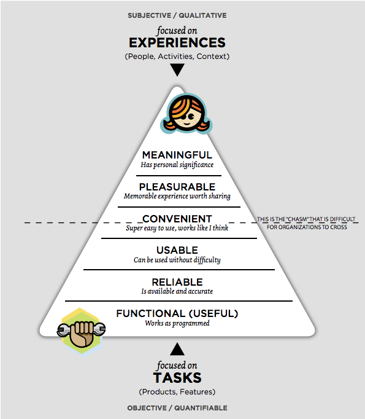 Afbeelding 1) User Experience Hierarchy of Needs model van Stephen Anderson
{kind=link}
Oplevering
Als eindproduct lever ik een uitbreiding op het huidige beheerdersgedeelte, met gebruik van echte data. De opgeleverde code is klaar voor productie en zorgt niet voor conflicten met het bestaande product.
Randvoorwaarden
Omdat ik werk aan een bestaand product in een bestaande codebase zijn er een aantal randvoorwaarden waar ik mij aan moet houden.
De backend is gebouwd met het PHP framework Laravel. Als ik aanpassingen aan de backend wil doen, moet ik ook PHP schrijven.
De code moet opgeleverd worden via de Bitbucket repository. Ik mag mijn code alleen samenvoegen met het bestaande project als deze geen errors oplevert.
Hoofdvraag
Na het vaststellen van het probleem en doelstelling heb ik de volgende hoofdvraag geformuleerd:
Hoe kan een digitale oplossing Fresh Heroes helpen om meer inzicht te krijgen in de acties van gebruikers op de website?
Deelvragen
Ik heb de hoofdvraag verdeeld in meerdere deelvragen, samen geven deze antwoord op de hoofdvraag.
- Op welke manieren kan ik in Laravel events bijhouden? <!---2. Welke manieren zijn er om datavisualisaties te maken en welke passen het beste bij mijn project?-->
- Welke data wil Fresh Heroes inzichtelijk krijgen?
- Welke soorten datavisualisaties zijn er?
- Welke bestaande oplossingen zijn er voor het bijhouden van gebruikersdata?
- Hoe wordt de grafieksoort bepaald voor data?
- Hoe ga je om met gebruikersdata?
Context
Huidige situatie
Fresh Heroes is een al draaiende website, bij mijn opdracht is het niet de bedoeling dat ik de huidige website drastisch verander. Daarom is het belangrijk de huidige situatie vast te stellen.
Product
Fresh Heroes is een website waarop bedrijven stages kunnen plaatsen en waarop studenten kunnen solliciteren. Hieronder volgens een paar screenshots om een indruk te geven van de website. De website is hier te bezoeken: Fresh Heroes.
Reguliere gebruikers
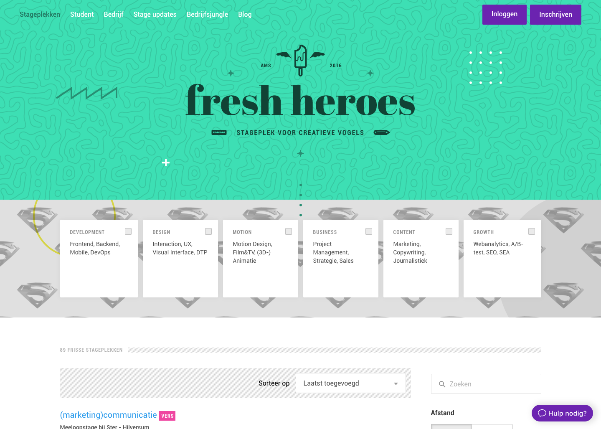
Afbeelding 2) Home
{kind=link}
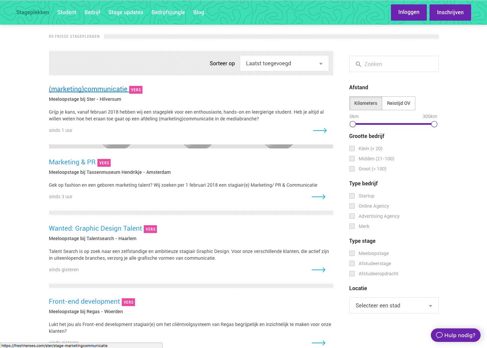 Afbeelding 3) Home - lijst met beschikbare stages
{kind=link}
{kind=link}
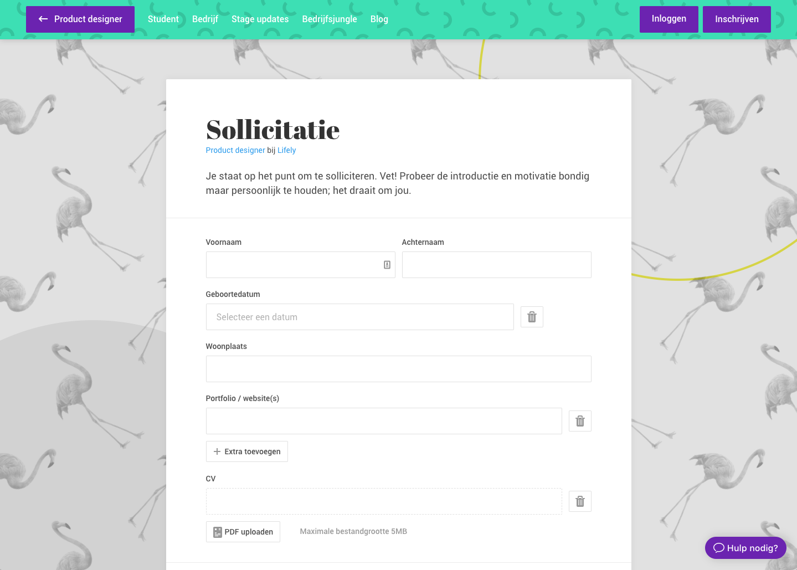 Afbeelding 5) Sollicitatie schrijven (alleen zichtbaar voor studenten)
{kind=link}
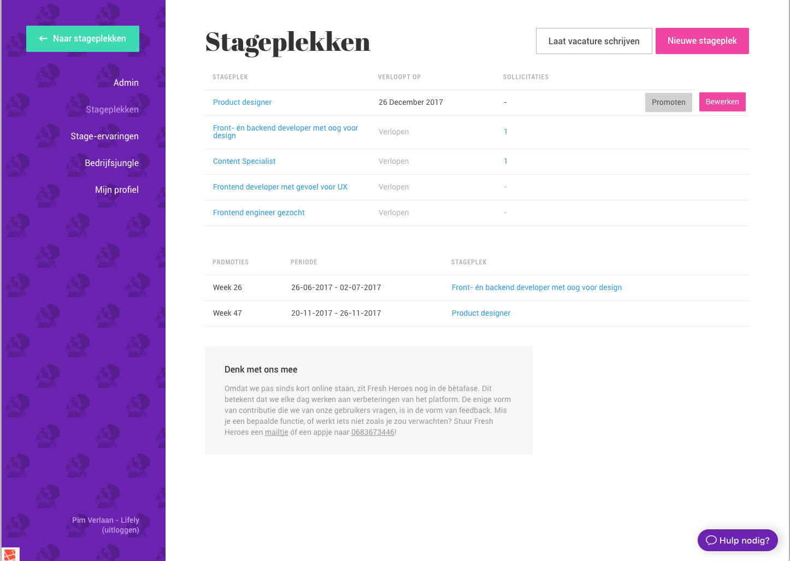 Afbeelding 6) Uitstaande vacatures (alleen zichtbaar voor bedrijven)
{kind=link}
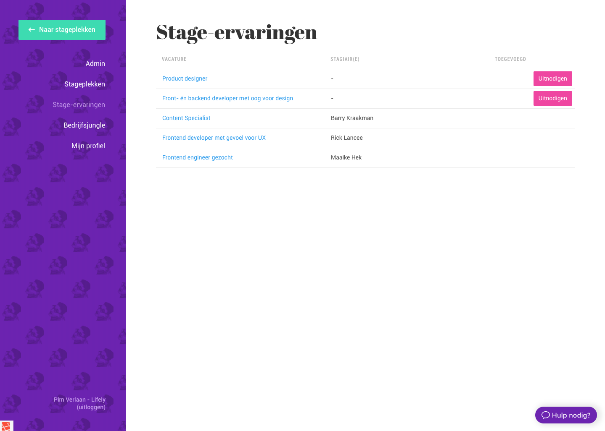 Afbeelding 7) Stage-ervaringen (alleen zichtbaar voor bedrijven)
{kind=link}
Admin gebruikers
Voor gebruikers met admin-rechten (medewerkers van Fresh Heroes of Lifely), is er het admin gedeelte. Hier komt ook mijn product te staan.
In de huidige situatie is de volgende data inzichtelijk voor administratoren:
- Hoeveel bedrijven en studenten zijn geregistreerd
- Welke bedrijven worden door wie beheerd
- Informatie over de servers Staging, Acceptance en Productie
- Wanneer er een mailings worden verstuurd
- Hoeveel mailings zijn verstuurd per categorie en algemeen
- Een overzicht van alle vacature promoties
- Informatie over bedrijfsjungles
Hieronder volgen een paar screenshots om hiervan een indruk te geven.
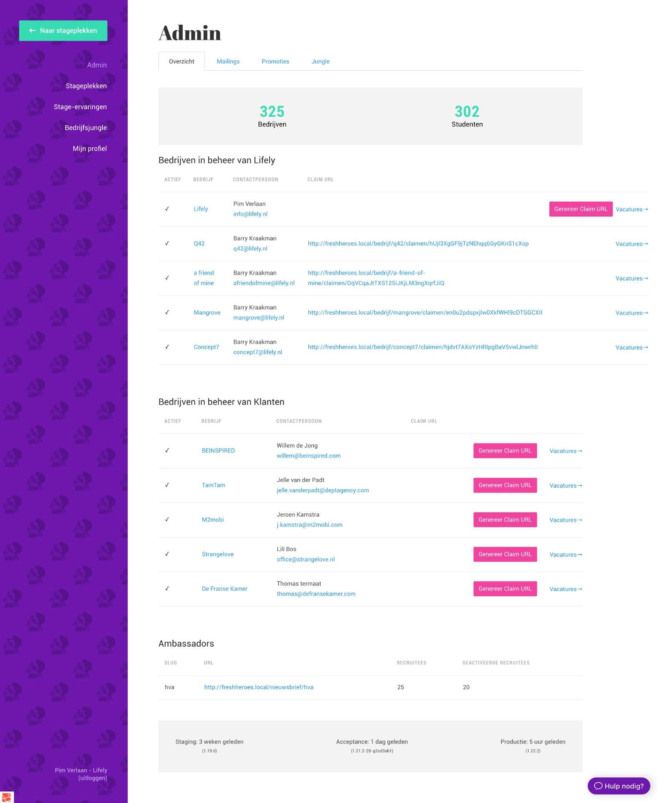 Afbeelding 8) Overzicht
{kind=link}
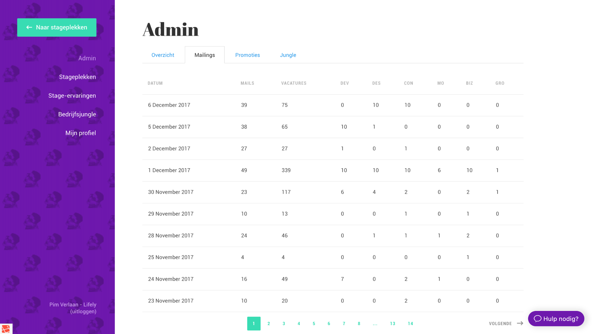 Afbeelding 9) Mailings
{kind=link}
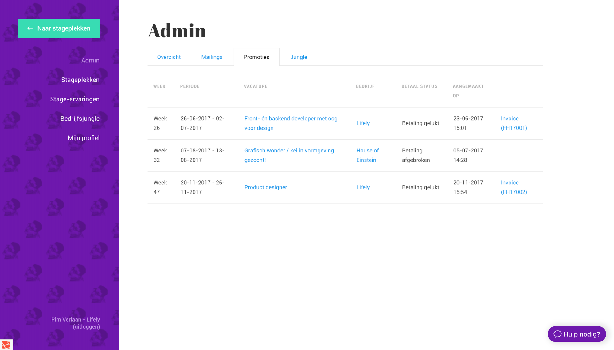 Afbeelding 11) Promoties
{kind=link}
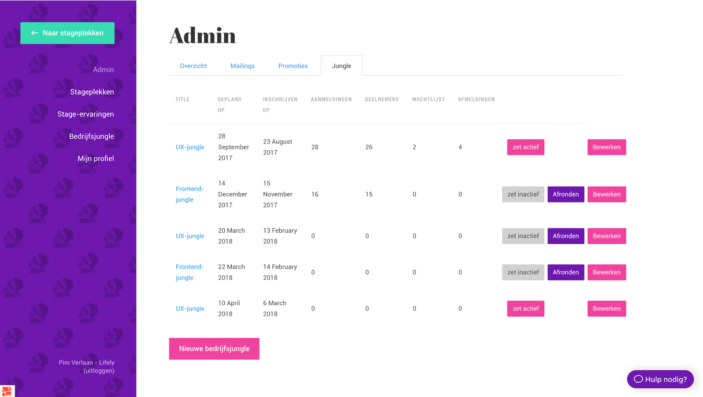 Afbeelding 12) Jungle
{kind=link}
Data
Voor het meten en inzien van gebruikersgedrag en hun acties worden nu tools van derde partijen gebruikt: Mixpanel, Analytics en Hotjar.
Mixpanel wordt gebruikt voor acties, zoals het bekijken van bepaalde pagina’s of sollicitaties. Ook het gebruikersoverzicht wordt gebruikt. Een nadeel van Mixpanel is dat het op dit moment een gratis versie is en de data niet langer dan 60 dagen wordt bewaard. De betaalde versie voor startups ligt niet binnen het budget en zelfs daar blijft de data maximum een jaar beschikbaar.
Analytics wordt ingezet voor de metrische data zoals wie wanneer de site bezoekt en hoe lang. Analytics is van Google en is erg uitgebreid in het aantal functionaliteiten. Dit is zo wel een voor- als nadeel aangezien het ook zorgt voor een leercurve. Google heeft daarom Analytics Academy gemaakt, om hun gebruikers te leren om te gaan met deze tool.
Hotjar wordt gebruikt voor de heatmaps en de opnames van gebruikersinteractie. Een nadeel van Hotjar is dat de data alleen beschikbaar is op hun website en niet via een Application programming interface (API) of op een andere manier.
Er wordt er al veel data bijgehouden in Fresh Heroes. Een overzicht van het huidige datamodel is te vinden in Bijlage 1. De belangrijkste data die momenteel wordt bijgehouden is de informatie over de vacatures, bedrijven en de gebruikers.
Door te kijken naar de aantallen van deze tabellen in bepaalde periodes kunnen al interessante conclusies getrokken worden, zoals bijvoorbeeld, welke vacatures het interessantste zijn, hoeveel vacatures een bedrijf plaatst en wanneer of op welk type vacature gebruikers het meest solliciteren.
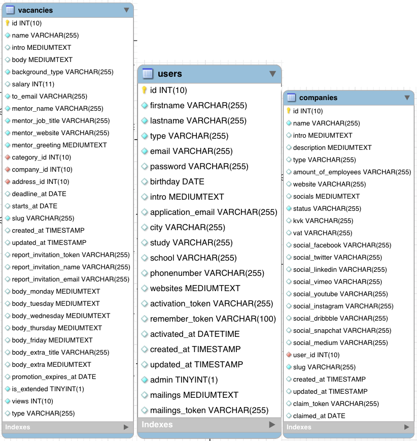 Afbeelding 13) De drie belangrijkste (bestaande) datatabellen in project
{kind=link}
Gebruikersdata en Veiligheid
Een groot deel van dit project gaat over het verzamelen van data om een product te verbeteren. Gebruikersdata kunnen positief gebruikt worden (zoals bij het verbeteren van producten), maar de angst bestaat dat deze data misbruikt wordt en gebruikers kunnen schaden. Een voorbeeld hiervan zijn datalekken bij sites. Laatst nog in Amerika bij Equifax, waarbij de data van zo’n 143 miljoen gebruikers buit was gemaakt door hackers(Ng, 2017). Ook in Nederland is dit een probleem. In september 2017 werd bekend dat hackers sinds november 2016 toegang hadden tot admin accounts en het mailsysteem van Deltalloyd (Hopkins, 2017).
Over de privacy van het verzamelen van data wordt ook in de politiek veel gesproken. In februari 2017 heeft de tweede kamer de nieuwe Wet op de inlichtingen- en veiligheidsdiensten (Wiv) aangenomen. In juli 2017 kwam deze ook door de eerste kamer (“Eerste Kamer der Staten-Generaal - Wet op de inlichtingen- en veiligheidsdiensten 2017 (34.588)”, z.d.), wat betekent dat vanaf januari 2018 de inlichtingendiensten meer data mogen gaan verzamelen, bijvoorbeeld van mensen die in dezelfde straat wonen als de verdachte.
Verder wordt er op het internet overal data verzameld. Een voorbeeld hiervan zijn de reclames van producten waarop jij net nog gezocht hebt. Dit gebeurt door middel van trackers en cookies die je ongevraagd binnen krijgt als je het internet gebruikt zonder adblockers en add-ons om deze trackers uitzetten.
Afbeelding 14) Een voorbeeld van een advertentie nadat ik een vraag over ‘SVG’ had gegoogled
{kind=link}
Hier is ook weerstand tegen. Zo is het een groep gelukt om een referendum over de Wiv te krijgen. Verder kun je artikelen en blogs vinden met informatie en tips om je eigen privacy te verbeteren, bijvoorbeeld op de website van de Consumentenbond. Mensen vinden het steeds belangrijker om controle te hebben over wie hun data verzamelt en gebruikt. Zo antwoordden in oktober 2016 86% van de ondervraagden van het EénVandaag opiniepanel de vraag ‘Hoe belangrijk is online privacy voor jou?’ met heel belangrijk of redelijk belangrijk.
Aanpak
Eén van mijn doelen in dit project is een werkend product op te leveren dat klaar is voor gebruik. Daarom heb ik, zodra mijn user requirements duidelijk waren, deze opgedeeld volgens de MoSCoW-methode (“DSDM Atern Handbook (2008)”, 2015).
Aan de start van dit project was ik van plan met duidelijke development sprints van twee weken te werken, om zo duidelijke stappen te kunnen maken.
In de praktijk bleek dat sprints van een week handiger waren. Dit komt omdat het maken van de datavisualisaties lastiger bleek dan verwacht en meer tijd kostten. Door sprints van een week te gebruiken heb ik mij kunnen focussen op één à twee visualisaties per week.
De technische planning lijkt op een kleine waterval:
- Het inbouwen van events op de backend
- Het ophalen van google analytics data en eigen event data
- Het bouwen van de data visualisaties
Ik heb hiervoor gekozen omdat ik zonder de vorige stap de volgende niet kan uitvoeren.
Onderzoek
User Requirements List
Aan de hand van de interviews (Zie bijlage X) heb ik de onderstaande user requirements uitgewerkt en verdeeld volgende MoSCoW-methode (“DSDM Atern Handbook (2008)”, 2015). De duur van het project is alleen genoeg is voor een Minimal Viable Product (MVP), dit betekent dat ik mij vooral focus op de punten in de "Must Have" lijst.
Tijdens dit project is de user requirements list vaak gewijzigd omdat er door de gebruikers nieuwe dingen werden bedacht. In overleg met hen heb ik vervolgens bepaald hoe belangrijk de wijziging is en heb ik deze op de juiste plek in de lijst geplaatst.
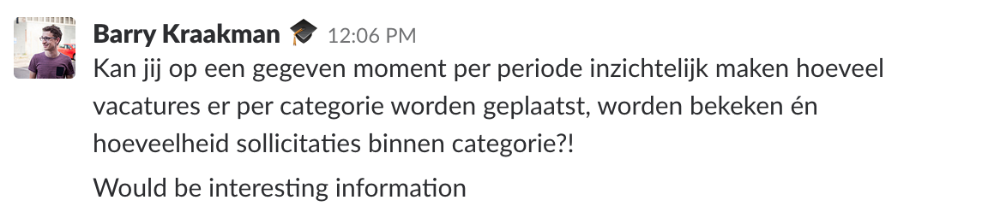 Afbeelding 15) Barry vraagt of bepaalde informatie ook inzichtelijk wordt in mijn oplossing
{kind=link}
Om verwarring te voorkomen gebruik ik voor de gebruikers van Fresh Heroes ‘users’ en voor de gebruikers van mijn oplossing ‘gebruikers’.
Must Have
- De gebruiker wil snel informatie kunnen aflezen
- De gebruiker wil zo ver mogelijk terug kunnen kijken in de data
- De gebruiker wil zien of er gebruikersacties zijn die niet zijn uitgevoerd
- De gebruiker wil processen inzichtelijker krijgen (Bijvoorbeeld: hoeveel mensen komen op de registratiepagina en hoeveel ronden een registratie af)
- Registratie funnel (pagina bezoek -> registreren -> account activeren)
- Sollicitatie funnel (Vacature bezoek -> sollicitatiepagina bezoek -> solliciteren)
- De gebruiker wil in de volgende punten inzicht krijgen
- Top 10 bekeken pagina’s
- Usersessies
- User behoud
- User acquisitie (Welke kanalen, hoeveelheid, Welke social media)
- Users (Aanmeldingen, per soort)
- Sollicitaties (per week, per periode, per categorie)
- Vacatures (per week, per periode, per categorie, welke er nu actief zijn)
Should Have
- De gebruiker wil Key Performance Indicators (KPI) aan kunnen geven
- De gebruiker wil kunnen zien of de KPI's worden behaald
- De gebruiker wil een overzicht van alle users
- De gebruiker wil in de volgende punten inzicht krijgen
- Stage-ervaringen
- Nieuwsbrief aanmeldingen
- Stagevergoeding en aantal sollicitaties
- Stagejungle (Wanneer, Wie, sollicitaties)
Could Have
- De gebruiker wil de resultaten van unit tests inzien
- De gebruiker wil de kwaliteit van users zien
- Hoe vaak wordt een vacature geplaatst door een user
- Hoe vaak solliciteert een user
- Hoe vaak is de user op Fresh Heroes
- Is de user aangemeld voor de nieuwsbrief
- De gebruiker wil de drop off rates inzien (per pagina, per event)
- De gebruiker wil de visualisaties kunnen exporteren voor gebruik in presentaties
Won't Have
- De gebruiker wil automatische mailings kunnen klaarzetten
Techniek
In dit hoofdstuk beschrijf ik de technische onderdelen van mijn project en wat ik gedaan heb om deze te realiseren.
Events
Na het opstellen van mijn user requirements list werd duidelijk dat het belangrijk was dat ik vroeg begin met de ontwikkeling. Veel van de data die mijn gebruikers willen zien werd niet opgeslagen of kon niet worden geëxporteerd uit Mixpanel. Uit mijn literatuuronderzoek werd aangeraden om vooral te werken met echte data, maar die was niet aanwezig. Daarom werd het maken van events en deze lanceren op de website een prioriteit.
Wat zijn events
Wanneer ik het heb over een event heb ik het over een gebeurtenis die wordt vastgelegd zodat de programmeur er iets mee kan (“Introduction to events”, z.d.). Simpel gezegd is een event alles wat de gebruiker bewust doet, van het klikken op een knop tot het solliciteren op een vacature.
Niet alle events worden getrackt, maar alleen degene waar Fresh Heroes data over wil. Welke events dit zijn wordt bepaald aan de hand van mijn user requirements list en de events die op dit moment gemeten worden met Mixpanel.
Waarom slaan wij zelf gebruikers events op?
Volgens Tristan Handy is het zonde van de tijd om in de beginfase van een start-up eigen events te gaan tracken. Dit klopt voor de meeste start-ups (Handy, 2017). Fresh Heroes heeft het voordeel dat ze uit een bestaand bedrijf voorkomt, waardoor zij kan leunen op de kennis en ervaring die daar al aanwezig is. Ook helpt het dat ik geen medewerker ben, ik doe dit project als afstudeerproject waardoor de developer van Fresh Heroes door werkt aan het platform.
Handy stelt zelf alternatieven voor zoals Business Intelligence (BI) tools als Mode en Looker maar deze kosten op zijn minst 500 dollar per maand. Dit past niet binnen het budget van Fresh Heroes.
Ook bij gebruik van de pro-versie van Mixpanel kan de eventdata maar één jaar worden teruggezien. Eén van de belangrijke user requirements is de mogelijkheid zo ver mogelijk terug te kijken waardoor dit geen optie is en het beter is om het zelf bij te houden.
Hier wordt ook anders over gedacht. Tomi Mester is er voorstander van dat bedrijven al redelijk snel overgaan op het vergaren van eigen data. Hij noemt zelfs drie problemen waar men tegenaan kan lopen indien er derde partijen gebruikt worden voor het vergaren van data (Mester, 2017). Deze zijn:
- Probleem 1: Je kan niet alle verbindingen leggen
- Probleem 2: Je kan moeilijk dingen voorspellen
- Probleem 3: Je kan de data niet volledig vertrouwen
Bij Fresh Heroes ligt het probleem vooral bij probleem één en twee. Probleem drie speelt op dit moment nog geen grote rol omdat er een klein aantal derde partijen zijn die alle drie andere dingen bijhouden.
Het eerste probleem ontstaat doordat de data die nodig is bij verschillende partijen staat. Het combineren van verschillende services is lastig omdat de data op vaste manieren wordt aangeleverd. Sommige sites leveren geen mogelijkheid data te exporteren zonder betaling. Wanneer de eigen data wordt bijgehouden ontstaan deze problemen niet. Er is volledige controle over de data.
Probleem twee ligt in het verlengde daarvan, vooral bij gratis versies van deze producten. Om een goede voorspelling te kunnen doen is veel data nodig over een zo lang mogelijke tijd. Gratis versies zijn vaak gelimiteerd.
Bij Fresh Heroes is dit een probleem, er kunnen geen stageperiodes met elkaar worden vergeleken als je maar 60 dagen terug kan kijken. Een korte stage is 10 en een lange stage 20 weken. Met de gratis versie van Mixpanel kan niet de gehele stageperiode worden ingezien. Daardoor kunnen geen goede voorspellingen worden gedaan met de huidige data. Wanneer Fresh Heroes deze data zelf opslaat kan er net zo ver worden teruggekeken als wenselijk is.
Data Model van Events
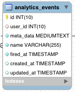 Afbeelding 16) Analytics_events tabel
{kind=link}
Samen met collega Rick heb ik de bovenstaande tabel bedacht. Analytics_events is op het eerste oog geen grote tabel en heeft een optionele relatie met de User tabel. Verder heeft het een naam, metadata en wordt er bijgehouden wanneer hij gemaakt is en geupdate.
De naam wijst naar het soort event, alle events die te maken hebben met vacatures beginnen met vacancy en daarna wat de gebruiker gedaan heeft.
In metadata worden dingen over de context opgeslagen in JSON formaat, zoals bijvoorbeeld welke vacature er bekeken is, de naam van de vacature en in welke categorie deze zit.
Ik heb voor deze structuur gekozen, omdat events erg verschillend zijn en andere context hebben. Als al deze waardes een eigen kolom zouden krijgen wordt de tabel onoverzichtelijk en zijn bovendien het merendeel van de waardes leeg.
Voorbeeld van metadata op een vacancy.view event:
{
"route":"vacancy.view",
"vacancy_id":350,
"vacancy_name": "Online Marketing - SEO, SEA, Copywriting",
"url":"https:\/\/freshheroes.com\/the-online-group\/stage-online-marketing-seo-sea-copywriting"
}
Implementatie van events
Voor de events van Fresh Heroes maak ik gebruik van de events-functionaliteit in Laravel (“Events - Laravel - The PHP Framework For Web Artisans”, z.d.). In dit stuk leg ik uit hoe deze werkt en tot stand is gekomen. De nieuwe versie van het datamodel met events kun je vinden in bijlage 2.
Events in Laravel werken met Listeners. Deze luisteren continu of een bepaald event wordt aangeroepen.
Het event waar mijn Listener naar luistert heet AnalyticsEventFired. Hierin worden de velden die een event ontvangt, opgeslagen en doorgegeven aan de Listener. Een AnalyticsEventFired heeft een naam, metadata en een user. Indien er geen metadata wordt meegegeven, wordt dit opgeslagen als een lege array en als er geen user wordt meegegeven is dit null.
<?php
class AnalyticsEventFired
{
use SerializesModels;
public $eventName;
public $metaData;
public $user;
/**
* Create a new event instance.
*
* @param string $eventName
* @param array $metaData
* @param user $user
* @return void
*/
public function __construct(string $eventName, array $metaData=[], User $user=null)
{
$this->eventName = $eventName;
$this->metaData = $metaData;
$this->user = $user;
}
}
De listener heet SaveAnalyticsEvent en luistert of het event AnalyticsEventFired is afgevuurd:
<?php
class SaveAnalyticsEvent implements ShouldQueue {
public function handle(AnalyticsEventFired $event)
{
$analyticsEvent = new AnalyticsEvent([
'name'=>$event->eventName,
'meta_data'=> $event->metaData,
'fired_at'=>$event->firedAt,
]);
if($event->user) {
$analyticsEvent->user()->associate($event->user);
}
$analyticsEvent->save();
}
}
Zodra dat gebeurt maakt hij een nieuw AnalyticsEvent aan, vult deze met de data die hij meekrijgt van het event en slaat hem op. Meer doet hij niet.
Om een event af te vuren moet het worden aangeroepen op plekken waar iets interessants gebeurt, bijvoorbeeld het bekijken van een vacature of een sollicitatie.
Voorbeeld event aanroepen:
<?php
event(new AnalyticsEventFired('vacancy.view', [
'route' => 'vacancy.view',
'vacancy_id' => $vacancy->id,
'vacancy_name' => $vacancy->name,
'url' => route('vacancy.view', ['company' => $company, 'vacancy' => $vacancy]),
'category_id' => $vacancy->category()->get()->first()->id
], Auth::user()));
Met new AnalyticsEventFired zeg ik dat het een nieuw event is, en geef ik in de parameters aan hoe het event heet (vancancy.view). Daarna geef ik de metadata mee in een associative array en als laatste geef ik de user mee. Deze komt eerst in het event terecht en wordt dan doorgegeven aan de listener die hem opslaat.
Technisch gezien zouden event ook direct opgeslagen kunnen worden maar er is voor gekozen om events te gebruiken om de volgende redenen:
Een event is onafhankelijk van zijn listeners. Een event zegt alleen maar dat er iets gebeurt is met wat extra informatie. Het geeft de mogelijkheid meerdere dingen uit te voeren zonder deze handmatig aan te roepen. Als er ooit besloten wordt om de tellingen van events op te slaan kan er nog een listener gemaakt worden die naar hetzelfde event luistert. Dit hoeft maar op één plek te worden toegevoegd en niet op elke plek waar een event wordt aangeroepen.
Als er een fout optreedt in het event blijft de rest van de code gewoon door draaien. Dit is fijn voor de user, voor hen is het niet relevant of het event slaagt.
Het is netter, een event is een observatie van een actie terwijl een functie een actie is.
Het is erg makkelijk om events te queuen, dat betekent dat ze niet direct worden uitgevoerd, maar pas later. Hierdoor hoeven gebruiker minder lang te wachten.
Een lijst van de huidige events is te vinden in Bijlage X.
Verbeteringen na test in de praktijk
Nadat de events werkend waren zijn ze gedeployed op de website. Hier hebben ze vijf dagen gedraaid waarna ik de binnengehaalde data heb geëvalueerd. Al snel werden een paar dingen duidelijk.
home.view events zijn een slecht idee
Doordat er een `home.view event was, werden er veel events aangemaakt waar Fresh Heroes weinig aan heeft. Deze events zorgden ervoor dat de database langzaam werd als ik data ophaalde.
Google Analytics houdt dit ook bij en heeft een API waaruit de data kan worden opgevraagd. Daarom heb ik in gezamelijk overleg besloten dit event er uit te halen.
 Afbeelding 17) Meer dan 24.000 events na vier dagen live, ongeveer 80% bleken home.view events te zijn
Afbeelding 17) Meer dan 24.000 events na vier dagen live, ongeveer 80% bleken home.view events te zijn
Het is niet zichtbaar welke events in dezelfde sessie gebeuren Doordat de id’s van users worden opgeslagen in events werd wel duidelijk welke events door dezelfde gebruikers gedaan werden en door de fired_at werd duidelijk welke waarschijnlijk bij elkaar hoorden als de gebruiker is ingelogd. Dit geldt niet voor gebruikers zonder account, al deze gebruikers zijn niet van elkaar te onderscheiden.
Rick wees mij erop dat je met Laravel gemakkelijk de HTTP-Sessie kan opvragen en meegeven aan het event. Daardoor via de session id worden gekeken hoeveel unieke gebruikers een vacature bekijken.
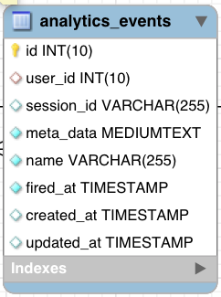 Afbeelding 18) De geupdate analytics_events tabel
{kind=link}
Category_id toevoegen aan de metadata van vacancy events
Ik kwam er achter dat als ik van een vacancy event wilde weten in welke categorie deze zat ik eerst de vacature moest opvragen en daarna pas de categorie kreeg. Dit moest individueel voor elk event, vaak was dat 200x. Hierdoor werd de pagina langzaam.
Een oplossing hiervoor is om category_id op te slaan in de metadata voor vacancy events. Ik heb hiervoor, samen met Dirk (Fresh Heroes developer), een migratie geschreven. Deze past de bestaande data aan waardoor alle vacancy events een category_id krijgen.
Voorbeeld van de geupdate metadata
{
"route":"vacancy.view",
"vacancy_id":350,
"vacancy_name": "Online Marketing - SEO, SEA, Copywriting",
"url":"https:\/\/freshheroes.com\/the-online-group\/stage-online-marketing-seo-sea-copywriting",
"category":5
}
Ophalen van data
Nu er events zijn en deze informatie bevatten moet deze informatie gestuurd worden van de backend naar de frontend van de applicatie. In dit hoofdstuk laat ik zien hoe de data worden opgehaald en doorgestuurd naar de voorkant.
MVC
Onze applicatie werkt volgens het Model View Contoller (MVC) model.
Model staat voor het datamodel, zie hoofdstuk Events. In het kort is dat de plek waar de data staat.
<?php
namespace App\Models;
use Illuminate\Database\Eloquent\Model;
class AnalyticsEvent extends Model
{
protected $fillable = ['name', 'user_id', 'meta_data', 'fired_at', 'session_id'];
protected $casts = [
'meta_data'=>'object'
];
protected $dates = [
'fired_at'
];
public function user()
{
return $this->belongsTo(User::class, 'user_id');
}
}
De View laat dingen zien. In Laravel is dat het template waar de HTML en PHP code in staat:
@extends('layouts.dashboard')
@section('subcontent')
<article class="ss-admin ss-admin--stats">
@include('dashboard.admin.subnav')
@include('dashboard.partials.notifications')
<section class="ss-admindashboard">
<div id="ss-signin"></div>
<section class="ss-admindashboard--section">
<div class="ss-graph ss-graph--bar ss-graph--mostVisitedPages"></div>
<div class="ss-graph ss-graph--bar ss-graph--sessionsPerDay"></div>
</section>
<section class="ss-admindashboard--section">
<div class="ss-graph ss-graph--bar ss-graph--pageViewsForPage"></div>
</section>
</section>
@endsection
@push('scripts')
<script>
window.fhAnalyticsEvents = {!! $analyticsEvents !!};
</script>
<script src="https://apis.google.com/js/client:platform.js" async defer></script>
<script src="{{ url()->asset(mix('js/adminDashboard.js')) }}" defer></script>
@endpush
@push('head-scripts')
<meta name="google-signin-client_id" content="494089095163-va551douo4p5vu7idjpu5tlp1i1vc21d">
@endpush
In de Controller kan data worden opgehaald en gemanipuleerd, zoals bijvoorbeeld een nieuw event opslaan. Via de Controller kan ook data worden meegeven aan de View, bijvoorbeeld de username laten zien van een ingelogde gebruiker.
<?php
namespace App\Http\Controllers\Dashboard\Admin;
use App\Http\Controllers\Controller;
use App\Models\AnalyticsEvent;
use Carbon\Carbon;
use SEO;
class EventsController extends Controller
{
public function index()
{
$fromDate = Carbon::now()->subWeek()->startOfDay();
$analyticsEvents = AnalyticsEvent::orderBy('fired_at', 'desc')->whereDate('fired_at', '>', $fromDate)->get();
SEO::setTitle(__t('dashboard.admin.companies.seo.title'));
return view('dashboard.admin.events.view', [
'analyticsEvents' => $analyticsEvents->toJson(),
'date' => $fromDate,
]);
}
}
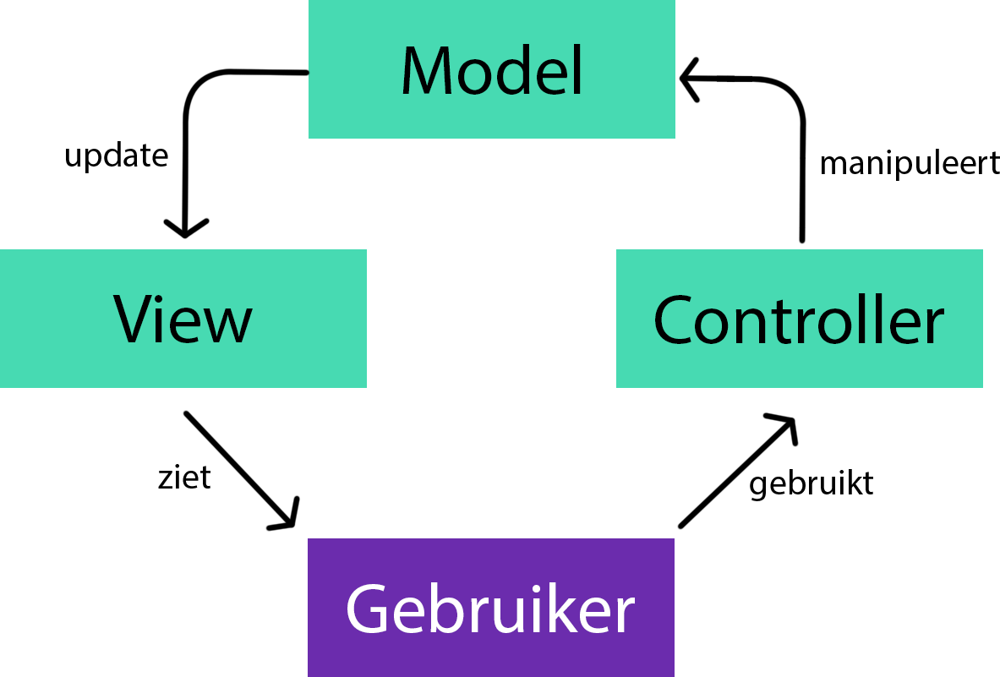 Afbeelding 19) Een diagram van het MVC-model.
{kind=link}
Voor mijn oplossing haal ik dus de event data op uit het Model in de Controller en geef ik die door aan de View. In de View kan ik deze weer meegeven aan het window object in een script tag. Van daaruit kan ik het uitlezen in Javascript en gebruiken voor een visualisatie.
Meegeven in de view:
@push('scripts')
<script>
window.fhNewUsers = {!! $newUsers !!};
</script>
<script src="{{ url()->asset(mix('js/adminDashboard.js')) }}" defer></script>
@endpush
Uitlezen in Javascript:
const newUsers = fhNewUsers;
Waarom niet via AJAX?
AJAX staat voor Asynchronous Javascript and XML (“Ajax”, z.d.). Hiermee kan data worden opgevraagd in Javascript. Hierdoor hoeft er niet te worden gerefresht als er nieuwe data is en kan deze regelmatig worden geupdate.
De manier van data ophalen die ik beschreven heb ik het vorige hoofdstuk werkt, maar is minder mooi dan met AJAX.
Om AJAX te gebruiken voor het ophalen van Data moeten er URL's komen waarop deze data te vinden is. Hiervoor moeten veel Routes worden aangemaakt in de Router. Routes zijn letterlijk de URL’s van de applicatie en de Router zorgt ervoor dat de juiste Controller wordt gekoppeld.
De meeste Routes hebben een Controller en een View, maar je kunt Controllers ook gebruiken zonder View. In plaats van een View meegeven met data, wordt de JSON direct naar de browser gestuurd. Deze pagina laat alleen de data zien.
<?php
namespace App\Http\Controllers\Dashboard;
use App\Http\Controllers\Controller;
use App\Models\Tag;
class TagController extends Controller
{
public function index()
{
$tags = Tag::all();
return $tags->toJson();
}
}
Ik heb, samen met Rick, besloten om niet voor deze manier te kiezen omdat het makkelijker is om de bestaande Controller voor de visualisaties te gebruiken en het veel tijd bespaart om geen extra Routes te moeten maken. Deze optie wordt wel meegenomen als aanbeveling omdat het gebruik van AJAX de user experience kan verbeteren (Brody, 2015).
Google Analytics
Om aan sommige user requirements te kunnen voldoen heb ik data nodig die wij zelf niet makkelijk bij kunnen houden met events. Deze data is wel beschikbaar in Google Analytics, dit is al geïmplementeerd in Fresh Heroes.
Google Analytics heeft een API om de data op te halen, de Google Analytics Reporting API. Deze kan op verschillende manieren aangeroepen worden, maar om tijd te besparen is er voor gekozen om dit via Javascript te doen.
Voor de Reporting API is de Google API Client en Sign-in library nodig, deze kan worden gebruikt door de volgende regel toe te voegen in de code:
<script src="https://apis.google.com/js/client:platform.js"></script>
Wanneer deze is ingeladen wordt Google API in Javascript aangeroepen met gapi. Om data op te kunnen vragen moet men wel ingelogd zijn met een Google Account dat toegang heeft tot analytics. Dit wordt gedaan door een Google Sign-In button te renderen:
<div id="ss-signin"></div>
const renderButton = (function() {
gapi.signin2.render('ss-signin', {
'onsuccess': displayResults,
'onfailure': onFailure,
'theme': 'dark'
});
})();
Als dit op de juiste manier wordt gedaan, krijg je de button te zien:
 Afbeelding 20) Google Sign-In button
Afbeelding 20) Google Sign-In button
Als dat gelukt is wordt data opgevraagd met gapi.client.request. Een standaard request naar de Reporting API ziet er als volgt uit:
gapi.client.request({
path: '/v4/reports:batchGet',
root: 'https://analyticsreporting.googleapis.com/',
method: 'POST',
body: {
reportRequests: [
{
viewId: 'XXXX',
dateRanges: [
{
startDate: '7daysAgo',
endDate: 'today'
}
],
metrics: [
{
expression: 'ga:uniquepageviews'
}
]
}
]
}
});
Wanneer deze code wordt uitgevoerd komt er een antwoord uit de API met hoeveel unieke pageviews er totaal waren op de website. Je kunt de queries uitbreiden, zo worden dimensies aan de data gegeven door een dimensions array toe te voegen aan het object in reportRequests:
dimensions: [
{
name: 'ga:pagePath'
}
]
Als dit wordt toegevoegd aan de vorige query, resulteert dit in het aantal unieke pageviews per pagina.
Zo kunnen meerdere dingen worden toegevoegd zoals het aantal resultaten dat terugkomt. Een complete lijst van mogelijkheden is te vinden in de documentatie van de Reporting API Creating a report en Advanced use cases.
Keuze voor D3
Ik heb bewust geen uitgebreid onderzoek gedaan naar de keuze van datavisualisatie frameworks. In het derde jaar van mijn opleiding heb ik les gehad in D3, dat staat voor Data Driven Documents. Ook bij Lifely heb ik meegewerkt aan een project waar gebruik gemaakt werd van D3. Omdat ik hier al ervaring mee heb leek mij dit de beste keuze gezien de korte tijd van het project.
Ook heb ik vertrouwen in mijn keuze omdat D3 ook door grote partijen als de New York Times (“Gallery · d3/d3 Wiki”, z.d.) worden gebruikt. Daarnaast is D3 een project dat actief onderhouden wordt, ondanks dat het al 6 jaar bestaat. Verder is er een actieve community en veel voorbeelden en uitleg waar ik uit kan putten als ik vast zit.
Hoe werkt D3?
D3 is een Javascript framework waarmee elementen worden gemanipuleerd op basis van data. Door koppeling van de data aan de elementen, kunnen aan de hand van de data de elementen worden aangepast. Zo kan dezelfde data worden gebruikt om een staafdiagram te maken, maar ook een cirkeldiagram.
D3 heeft ook veel handige functies, zo kan aan de hand van de data worden uitgerekend hoe hoog de staven in je staafdiagram moeten zijn en wat handige stappen zijn voor de assen. Meer informatie over deze functies is te vinden in 'Hoe maak je een datavisualisatie in D3'.
Omdat D3 te groot is om helemaal te behandelen licht ik toe hoe ik het gebruik in mijn oplossing en het data join principe.
SVG of Canvas
Bij D3 moest ik kiezen of ik Scalable Vector Graphics (SVG) of Canvas ging gebruiken. Een SVG is vergelijkbaar met een HTML document. Wat SVG is voor een afbeelding is een HTML document voor tekst. Een SVG bestaat uit tekst en heeft een eigen Document Object Model (DOM), waardoor het makkelijk kan worden doorzocht.
Canvas is een container voor een afbeelding, die volledig getekend wordt door javascript. Het heeft geen DOM. Voor de gebruiker is het hetzelfde als een afbeelding. In browsers kan het ook worden opgeslagen als afbeelding.
Voordelen SVG
Omdat SVG een eigen DOM heeft kunnen hier gemakkelijk interacties mee worden gemaakt. Event Listeners op SVG-elementen kunnen op dezelfde manier worden geplaatst als op HTML-elementen. Bij Canvas kan dit niet, deze heeft geen DOM, waardoor de locatie van de elementen zelf moet worden bijgehouden en vergeleken met waar het Event is gebeurd.
Een ander voordeel van SVG in combinatie met D3, is dat D3 gebouwd is met SVG als basis. Hierdoor zijn veel voorbeelden gemaakt met SVG in plaats van Canvas en is het makkelijker hier hulp voor bij problemen.
Voordelen Canvas
Een groot voordeel van Canvas is dat het sneller is, omdat het geen DOM heeft. Bij veel elementen kan een SVG zwaar worden en de pagina langzamer maken. Vooral in combinatie met animaties of zoomen kan dit leiden tot schokkerige animates. Bij Canvas wordt alles uitgerekend in Javascript. Dit kan wel blokkerend zijn voor de rest van de code als er zware calculaties worden gebruikt, maar verwacht hier niet mee te maken te krijgen.
Keuze
Ik heb uiteindelijk voor SVG gekozen. Ik ga geen hele ingewikkelde datavisualisaties maken waarbij honderden elementen voorkomen. Wel wil ik gaan kijken naar interactie, wat makkelijker is met SVG.
Hoe maak je datavisualisatie met D3
Om meer duidelijkheid te geven hoe dit werkt in de praktijk licht ik één van de datavisualisaties toe. Ik heb ervoor gekozen om een simpele staafdiagram door te lopen, de Nieuwe vacatures per categorie. Ik heb de code opgesplitst voor de toelichting. De volledige code is te vinden in Bijage 3.
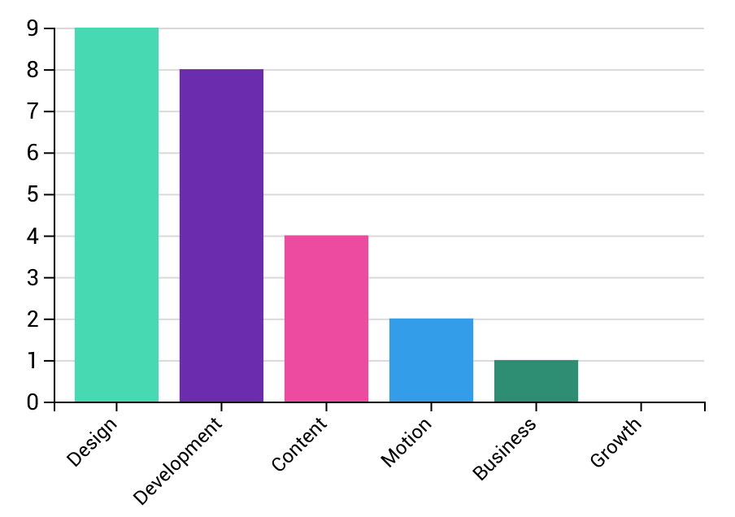 Afbeelding 21) Het resultaat van dit hoofdstuk
{kind=link}
De staafdiagram wordt gemaakt door de functie renderNewVacanciesPerCategory. Eerst maak ik variabelen waarin ik aangeef hoeveel marge rond de grafiek is en hoe groot deze moet zijn:
const renderNewVacanciesPerCategory = function(data) {
const margin = {
right: 10,
bottom: 70,
left: 40,
};
const width = 450 - margin.left - margin.right; // resultaat: 400
const height = 300 - margin.bottom; // resultaat: 230
Daarna worden deze data gesorteerd, van de meeste nieuwe vacatures per categorie tot de minste. Een voorbeeld van deze data is te vinden in Bijlage 4.
data.sort((a, b) => b.created - a.created);
Vervolgens geef ik aan welke schalen er zijn. Er zijn schalen voor verschillende soorten data, deze staafdiagram gebruikt de scaleLinear voor de y-as (het aantal vacatures) en scaleBand voor de x-as (categorieën). Deze passen bij de nominale data en ratio data van dit diagram, zie hoofdstuk Grafiek Keuze. Voor de kleuren wordt scaleOrdinal gebruikt om de kleuren in de .range aan de categorieën te koppelen.
const x = d3.scaleBand().range([0, width]).padding(0.2);
const y = d3.scaleLinear().range([height, 0]);
const categoryColors = d3.scaleOrdinal()
.range(['#3DDBB1', '#6C23B0', '#EF47A1', '#2B9CEC', '#288F73', '#F2F050', '#FF7700']);
x.domain(data.map(d => d.name));
y.domain([0, d3.max(data, d => d.created)]).nice();
Een scale-functie zet een bestaande schaal (de minimale en maximale waarde van de data) om naar een schaal die bruikbaar is voor visualisaties op basis van de hoogte en breedte van de grafiek. Voor mijn grafiek betekent dat x uitrekent waar de staven komen te staan en hoe breed deze zijn aan de hand van het aantal categorieën. De y rekent uit wat de positie van de staven moet worden vanaf de bovenkant van de visualisatie.
Daarna voeg ik een titel toe aan de grafiek:
const title = document.createElement('h2');
const graph = document.getElementsByClassName('ss-graph--newVacanciesPerCategory')[0];
title.innerHTML = 'Nieuwe vacatures per categorie';
graph.appendChild(title);
De volgende stap is het toevoegen van de hulplijnen. Hiervoor wordt de D3 functie axisLeft gebruikt met de y-scale. Deze zet de schaal om in logische stappen voor de assen.
svg
.append('g')
.attr('class', 'ss-graph__grid ss-graph__grid--y')
.attr('opacity', `0.15`)
.call(d3.axisLeft(y).ticks(null, 's').tickFormat('').tickSize(-width));
De staven van de staafdiagram worden daarna uitgerekend. Als eerste maak ik een selectie met .selectAll. Daarna kan de data eraan gekoppeld worden via .data. Met .append kunnen er staven gemaakt worden voor elk datapunt. Dit principe heet een data join en leg ik uit in het volgende gedeelte.
svg
.selectAll('.bar')
.data(data)
.enter()
.append('rect')
Nadat de staven zijn toegevoegd worden ze gestyled. Dit wordt gedaan door middel van .attr of .style. De eerste staat voor attributen, dat zijn dingen die direct op het element worden geplaatst, bijvoorbeeld: <rect class=”ss-graph__bar bar” x=”0”>. Hier zijn class en x attributen van rect. Bij .style worden de waardes toegevoegd aan het style attribuut. Een voorbeeld hiervan is het meegeven van een fill in de .style(): <rect style=”fill: rgb(61, 219, 177);”>.
Om de hoogte, breedte en positie van de staven uit te rekenen wordt de data gebruikt. D3 geeft de mogelijkheid een functie aan te roepen in plaats van een vaste waarde. De functie krijgt de volgende parameters mee: d (voor data), i (voor index, oftewel de huidige positie in de array) en nodes (de huidige groep elementen die gemaakt is).
De positie is verdeeld in x en y. De x positie wordt door de functie x uitgerekend aan de hand van de categorie. De x functie geeft dan de positie terug van de categorie. De y wordt op dezelfde manier uitgerekend, maar dan met het aantal vacatures als parameter. De breedte is voor elke staaf hetzelfde, daarom hoeft er geen gebruik worden gemaakt van de data, maar kan x.bandwidth direct worden aangeroepen. De hoogte is wel verschillend. De y functie rekent niet uit hoe hoog hij moet zijn, maar alleen waar hij moet komen te staan. Dat betekent we de hoogte zelf nog moeten berekenen. Dit kan door de totale hoogte van de grafiek te nemen en de waarde uit y er vanaf te trekken.
svg.
// ...de code van het vorige codeblok
.attr('class', 'ss-graph__bar')
.attr('x', d => x(d.name))
.attr('width', x.bandwidth())
.attr('y', d => y(d.created))
.attr('height', d => height - y(d.created))
.style('fill', d => categoryColors(d.name))
Als laatste kun je nog interactie toevoegen door gebruik van .on, hierin kan elk Javascript event mee worden gegeven. In het code voorbeeld er onder selecteer ik de huidige staaf en toggle ik de class active op mouseover en mouseout.
svg.
// ...de code van het vorige code block
.on('mouseover', (d, i, nodes) => {
d3.select(nodes[i]).classed('active', true);
})
.on('mouseout', (d, i, nodes) => {
d3.select(nodes[i]).classed('active', false);
});
Data join
Eén van de belangrijke principes in D3 is de data join. Hiermee kunnen meerdere elementen in één keer worden gemaakt op basis van de data. Hierbij gelden wel andere principes dan normaal. Standaard worden bestaande elementen geselecteerd, of niet bestaande gecreeërd. Via D3 kan een lege selectie worden gebruikt en gevuld aan de hand van data.
svg
.selectAll("circle")
.data(data)
.enter()
.append("circle")
.attr("cx", function(d) { return d.x; })
.attr("cy", function(d) { return d.y; })
.attr("r", 2.5);
(code voorbeeld van Chuck Grimmett; de SVG is leeg)
Met deze code wordt tegen D3 gezegd dat er voor elk element in de data array een circle toegevoegd moet worden. Eerst wordt een selectie gedaan op alle circle elementen. Hieruit komt een lege selectie, omdat de SVG leeg is. Daarna wordt deze selectie aan de data gekoppeld door middel van .data(data).
Wanneer data aan een selectie wordt gekoppeld krijg je drie andere selecties terug: enter (datapunten die nog geen element hebben), update (elementen die al een datapunt hebben) of exit (elementen waar de datapunten niet meer van bestaan). De .data geeft altijd de update selectie terug, maar daarna kan .enter() of .exit() worden aangeroepen om de andere selecties te gebruiken.
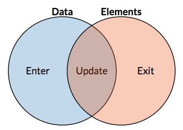 Afbeelding 22) Schema van een data join in D3. Bron: (Grimmett, 2016)
{kind=link}
Bij het voorbeeld is er alleen een enter selectie, er bestonden namelijk nog geen elementen in de SVG. Met .enter().append(‘circle’) wordt er voor elk element in deze selectie een circle toegevoegd. Deze wordt daarna aangepast met .attr om bijvoorbeeld het uiterlijk te veranderen.
Gebruikersdata en veiligheid
In mijn project maak ik gebruik van gegevens van gebruikers, daarom is het belangrijk te onderzoeken hoe het zit met de veiligheid en of dit wel overeenkomt met de wetgeving.
De huidige situatie
Fresh Heroes heeft een privacy policy, waarin wordt gemeld wele data worden opgeslagen:
- Naam
- Telefoonnummer
- Adres
- Geboortedatum
- Gebruikersnaam, wachtwoord en e-mailadres
- Profiel-informatie
- Communicatie tussen Fresh Heroes en gebruiker
- School & opleiding
- Log file informatie
- Metadata
Ook wordt er gemeld dat er gebruik wordt gemaakt van Google Analytics, maar nergens wordt gemeld dat er ook data wordt gedeeld met Mixpanel.
Toen Fresh Heroes gebouwd werd is er niet expliciet rekening gehouden met veiligheidsstandaarden. Wel zijn er dingen meegenomen als het hashen van de wachtwoorden. Verder zijn er een aantal maatregelen genomen om er voor te zorgen dat de database en server goed beveiligd zijn.
De database is afgesloten met een username en wachtwoord, ook is er alleen toegang via de server. Er is een firewall die alle andere connecties verbreekt als deze niet lokaal zijn.
De server heeft geen root-wachtwoord, maar gebruikt Secure Shell (SSH). SSH is een techniek om netwerken en verbindingen te beveiligen. Door middel van keys die worden gegenereerd kan het verkeer worden versleuteld en weer ontsleuteld. Dit is veiliger dan wachtwoorden omdat de sleutel niet naar de server wordt gestuurd. Ook heeft applicatie beperkte rechten.
Er zijn wel mogelijkheden om binnen te komen via social engineering, als iemand zijn wachtwoord ergens laat slingeren of doorgeeft, kunnen derden ook de data van Fresh Heroes in zien. Wanneer mensen bij Lifely (en Fresh Heroes) komen werken, krijgen zij een aantal tips om dit te voorkomen. Zo wordt er verwacht dat je op je Mac FileVault aanstaat, zodat de hard drive is versleuteld in het geval dat je laptop wordt gestolen of je deze verliest. Ook wordt er uitgelegd hoe zij verantwoordelijk om moeten gaan met keys. Als de keys gedeeld moeten worden met andere developers, wordt daarvoor Keybase gebruikt, waarmee veilig berichten naar elkaar kunnen worden gestuurd.
De wet
Op dit moment geldt de Wet Bescherming Persoonsgegevens (WBP). Daarin staan een aantal belangrijke regels waar bedrijven zich aan moeten houden als om wordt gegaan met persoonsgegevens. Persoonsgegevens zijn alle gegevens waarmee kan worden achterhaald wie een persoon is. Bijvoorbeeld namen, adressen etc. Tot 6 november 2017 was er voor bedrijven de plicht om te melden bij de Autoriteit Persoonsgegevens dat er persoonsgegevens worden verwerkt.
Persoonsgegevens
Er zijn verschillende gradaties in persoonsgegevens. Zo zijn er de standaard persoonsgegevens, waarmee je iemand direct kan achterhalen. Maar er zijn ook pseudo anonieme persoonsgegevens, dit zijn gegevens die een persoon wel uniek maken, maar waarmee niet kan kan worden achterhaald wie deze persoon is zonder aanvulling, zoals gebruikers id’s. Zonder een email of een koppeling met gebruikersnaam valt er niet te achterhalen naar wie deze verwijst. Als laatste zijn er anonieme gegevens, dit zijn gegevens waarbij het niet meer mogelijk is om de persoon te identificeren.
Bij Fresh Heroes worden vooral pseudo anonieme data in events verzameld, maar er worden ook persoonsgegevens opgeslagen als emails, sollicitaties etc. De meeste dingen zijn nodig om een service te kunnen leveren, als een sollicitatie niet wordt opgeslagen, kan deze niet worden doorgestuurd naar het bedrijf. Daarvoor hoeft niet expliciet toestemming gevraagd te worden omdat dit vanzelfsprekend is. Eventdata valt hier niet onder en volgens de wet moet de gebruiker toestemming geven om deze informatie op te slaan en voor welk doeleinde het wordt opgeslagen.
Big Data en Profiling
Bij Big Data en Profiling worden veel gegevens opgeslagen om over een langere periode conclusies te trekken en voorspellingen te doen. Hier kan mijn project ook onder vallen, er worden immers gebruikersdata verzameld om te kijken hoe het product draait. Of het ook profiling is, is lastig vast te stellen, omdat dat het opdelen van mensen in clusters nu niet wordt gedaan. Dit is wel mogelijk met de data die worden verzameld.
Correctierecht
Het correctierecht betekent dat gebruikers recht hebben om hun data in te kunnen zien, verbeteren, aanvullen, verwijderen of afschermen. Dit mag wanneer de verzamelde informatie onjuist is, onvolledig of niet past bij het doel van de service of dienst. Bij wet is een organisatie verplicht om binnen vier weken te antwoorden op een verzoek. Dit recht is bij Fresh Heroes ook opgenomen in de privacy policy, maar is (nog) geen mogelijkheid voor gebruikers om het tracken.
Beveiligingsplicht
Er moet worden gezorgd dat alleen geautoriseerde mensen toegang hebben tot de data, zowel organisatorisch als technisch. Alleen mensen die administrator zijn kunnen bij de eventdata. Gebruikers kunnen wel bij hun eigen data en bij de data die een gebruiker kiest te publiceren (zoals een vacature of een bedrijfsprofiel). Er zijn al technische maatregelen genomen om de data te beveiligen, deze zijn beschreven in het hoofdstuk de huidige situatie.
Algemene Verordening Gegevensbescherming
In mei 2018 komen er nieuwe regels vanuit de Europese Unie. Daarbij blijven de bovenstaande dingen grotendeels gelden, maar er gaan ook een paar dingen veranderen:
- Geen meldingsplicht meer, wel een documentatieplicht
- Er moet duidelijk toestemming gevraagd worden aan de gebruiker en de gebruiker moet dit later kunnen aanpassen
- Grote bedrijven moeten een Functionaris Gegevensbescherming aanstellen wanneer er op grote schaal persoonsgegevens worden verzameld of als het onderdeel is van een overheidsinstelling
- De gebruiker mag eisen dat zijn data worden verwijderd
- De gebruiker heeft recht op portabiliteit, dat betekent dat ze recht hebben om hun gegevens op te vragen in een standaard formaat
Datavisualisaite
Concurrentieanalyse
Ik heb gekeken naar platformen die ook gebruik maken van gebruikersdata of eventdata en naar hun interacties en design. Ik heb de volgende platformen onderzocht:
- Google Analytics
- Mixpanel
- Kissmetrics
- Baremetrics
- Wootric
Hieruit heb ik de volgende conclusies getrokken:
- Hovers worden vooral gebruik om meer informatie te geven
- Kleuren in visualisaties worden gebruikt om onderscheid te maken tussen verschillende typen data
- Bij alle platformen kan je het datumbereik van de data aanpassen
- Veel data is zowel positief als negatief, door veel data kan de gebruiker meer doen, maar ook de weg kwijt raken
- De layout van de dashboards is vaak simpel
- Data in de dashboards zijn gecategoriseerd per pagina
De gedetailleerde versie van mijn concurrentieanalyse is te vinden in Bijlage 3.
Best practices
Ik heb onderzoek gedaan naar de best practices voor het maken van een data visualisatie.
Less is a bore
In het boek Envisioning Information heeft Tufte het over de kwaliteit van informatie. Bij veel ontwerpen wordt er gesproken over ‘Less is more’ maar volgens Tufte is het bij informatie juist omgekeerd, oftewel: Less is a bore. Hiermee bedoelt hij dat een simpele datavisualisatie niet betekent dat de informatie ook makkelijk te begrijpen is. Soms is er iets meer context nodig om te begrijpen waar iets overgaat.
Ook gaat het over de kwaliteit van de informatie, bij simpele informatie is er vaak maar één manier om ernaar te kijken. Dit betekent dat de designer al een keuze maakt in wat belangrijk is in de visualisatie. Volgens Tufte is dit niet aan de designer, maar aan de lezer. Door meer informatie in een visualisatie te stoppen kan de lezer zelf bepalen wat belangrijk is.
Kleur en Contrast
In design zijn kleur en contrast erg belangrijk, dat geldt ook voor een datavisualisatie. Door het gebruik van kleur kunnen meerdere lagen worden aangegeven, zoals bijvoorbeeld meerdere categorieën in dezelfde visualisatie. (Tufte, E. R. (1992). Envisioning Information. Graphics Press.)
Contrast is belangrijk om dingen overzichtelijk te houden. Door dingen die belangrijk zijn dikker te maken, zijn gebruikers eerder geneigd om daarnaar te kijken. (Ware, C. (2004). Information Visualization: Perception for Design. Elsevier.) Dit kan ik gebruiken om dingen die interessant zijn te belichten in mijn visualisaties.
Kijk uit voor chart junk
In Tufte’s boek wordt ook het begrip chartjunk gebruikt. Dit betreft de dingen die rond een visualisatie staan, maar niets toevoegen. Denk hierbij aan afbeeldingen of een illustratie om of in de visualisatie zelf. Een ander voorbeeld hiervan is het gebruik van 3D in een visualisatie. Dit kan ervoor zorgen dat delen groter lijken dan ze eigenlijk zijn waardoor verwarring ontstaat:
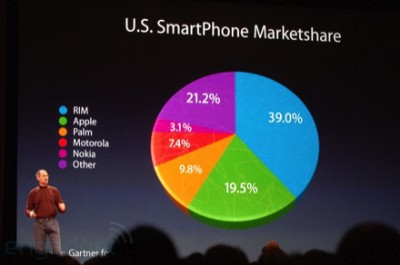 Afbeelding 23) Door het 3d effect lijkt de 19.5% groter dan de 21.2% Bron: (“Chart dos and don’ts”, 2016)
{kind=link}
Weet het doel van je datavisualisatie
Het is verstandig om te bepalen wat je wilt bereiken met je datavisualisatie of wat de gebruiker er mee wil bereiken. In de presentatie van Rost, Why Do We Visualize Data?, noemt ze drie redenen waarom mensen gebruik maken van visualisaties:
- Inspireren, hierbij gaat er vooral om de data mooi en interessant weer te geven
- Begrijpen, hierbij is het belangrijk dat de gebruiker de data kan interpreteren
- Impliceren, hierbij wordt de datavisualisatie gebruikt om een mening te ondersteunen
Bij mijn datavisualisatie is Begrijpen de voornaamste reden. Rost legt verder uit wat belangrijke stappen zijn bij dit soort datavisualisatie:
- Begrijpen
- Uitleggen
- Onderzoeken
Dit betekent dat je eerst zelf de data moet Begrijpen omdat je deze als ontwerper anders niet kan Uitleggen aan je gebruiker. Soms is er niet de mogelijkheid of de ruimte om alles uit te leggen aan de gebruiker, maar wil je dat gebruiker de data zelf Onderzoeken. Daarbij is het belangrijk dat je de gebruiker tools geeft om dit te doen. Een voorbeeld van dit soort visualisaties zijn dashboards.
Dashboard design
Omdat mijn oplossing een onderdeel is van een bestaand dashboard vind ik het belangrijk om te kijken naar de principes van Dashboard Design.
Werk vanuit gebruikers doelen
Een dashboard wordt vaak gebouwd om gebruikers inzichten te geven of om productiviteit te vergroten (O’Sullivan, 2016). Daarom is het belangrijk om goed onderzoek te doen naar de gebruiker of samen te werken met gebruikers. Ik doe dit ook in mijn project, als ik vragen heb kan ik gemakkelijk aan mijn gebruikers vragen wat zij willen of wat ze handig vinden.
Prioritiseer data
In zijn artikel Dashboard Design - Considerations and Best Practices legt Subotin uit dat het prioriteren van data een belangrijk onderdeel is. Niet alles is even nuttig en bij een dashboard is het belangrijk om snel en gemakkelijk de belangrijkste dingen te laten zien.
Ook heeft Subotin het over het principe Progressive Disclosure. Dat betekent dat er dingen worden verstopt die minder belang hebben. Zo kan de gebruiker zelf bepalen wanneer ze dit willen zien. Een voorbeeld hiervan is een detail van een datapunt dat zichtbaar wordt wanneer je ergens overheen hovert.
Testen in de praktijk
Een dashboard wordt vaak intensief gebruikt door gebruikers, waardoor het belangrijk is dat gebruikers er goed mee om kunnen gaan. Veel dingen kunnen door kleine testen al gefilterd worden. Maar het is belangrijk om ook te testen met echte data en een afgerond design. Vooral bij datavisualisaties is dit belangrijk, omdat er data nodig zijn om een goede visualisatie te maken.
Categoriseren van data
Omdat het al snel duidelijk werd dat de wensen van mijn gebruikers niet op één pagina passen moest ik beslissen welke data bij elkaar hoort. In gezamelijk overleg is de volgende selectie van pagina's gemaakt:
- Algemene statistieken van de website
- Informatie over gebruikers
- Vacatures en Sollicitaties
Interactie
Mijn oplossing is een webapplicatie en op het web is interactie erg belangrijk. Maar omdat het belangrijk is datavisualisaties simpel te houden wil ik alleen nuttige interactie toevoegen. Daarvoor heb ik gekeken naar de voorbeelden in mijn concurrentieanalyse maar ook naar de datavisualisaties van de New York Times. Hieruit heb ik de volgende nuttige interacties gehaald:
- Scrollen voor meer data, de Buy Rent Calculator is hier een mooi voorbeeld van
- Databereik aan kunnen passen door gebruik van een datepicker
- Zoeken
- Progressive Disclosure
Grafiek Keuze
In datavisualisaties zijn veel verschillende soorten data. Om een goede visualisatie te kunnen maken moet ik eerst weten welke soorten er zijn. In het boek Information Visualisation wordt data opgesplitst in entiteiten en relaties. Een entiteit is een object. Dit kan een ding zijn, zoals een view, maar ook groepen van dingen zoals een soort vacature. Een relatie is de structuur tussen entiteiten, oftewel de manier waarop ze bij elkaar horen.
Entiteiten en relaties hebben attributen, dit zijn eigenschappen zoals hoe vaak een vacature bekeken is. Simpelweg hebben attributen 4 soorten data: nominaal, ordinaal, interval en ratio. Nominaal staat voor woorden en labels, zoals ‘Nieuwe Studenten’. Ordinaal is geordende data, zoals een lijst van hoog naar laag. Interval wordt vaak gebruikt voor tijd en het werkt goed om gaten te ontdekken tussen de waardes. Ratio is een numerieke verhouding tussen entiteiten. Vaak wordt hier 0 als basis gebruikt. Dit zijn de meeste numerieke waardes, bijvoorbeeld het aantal views van vacature.
Om een goede keuze te kunnen maken per soort grafiek heb ik gebruik gemaakt van The Data Visualisation Catalogue. Op deze website is een groot aantal datavisualisaties opgeslagen en kan worden gefilterd op het soort data in een visualisatie. Per visualisatie licht ik kort toe in Bijlage X waarom ik deze vorm gekozen heb.
Validatie
Tussentijdse feedback
Tijdens het bouwen van mijn oplossing vraag ik vaak feedback aan mijn collega’s. Voornamelijk aan Barry als ik vragen heb over mogelijke interacties omdat hij het meest gebruik gaat maken van mijn oplossing. Meestal stuur ik een bericht over Slack of doe een kleine demonstratie. Een voorbeeld hiervan was de keuze tussen histogram en line chart bij de Pageviews voor /bedrijfsjungle per dag visualisatie.
Als ik vragen heb over de techniek vraag ik dat meestal aan mijn collega Rick. Hij heeft eerder in Fresh Heroes gewerkt, zowel aan de frontend als de backend. Vooral bij vragen over Laravel heeft hij mij veel verder geholpen. Verder heb ik ook hulp gevraagd aan Dirk bij merge conflicten en aan Peter bij een migratie die niet helemaal lekker liep.
Lunch Presentatie
Op 4 december heb ik voor mijn collega’s bij Lifely een demo gehouden van het dashboard. Het was vooral leuk om te laten zien waar ik mee bezig was, maar ik heb er geen nuttige feedback uitgehaald.
Feedback Frenzy
Tijdens de Feedback Frenzy op 23 november heb ik vooral feedback en tips gevraagd over hoe ik meer interactie kan toevoegen aan mijn visualisaties en wat ik kan doen om mijn design te verbeteren. Ik kreeg vooral tips om mij te laten inspireren door andere analytics tools en mij minder te focussen op design maar meer op de andere punten van mijn project. Een designer kan eventueel later nog een slag maken over mijn prototype. Als laatste kreeg ik de tip om voorlopige conclusies uit de data ook te verwerken in mijn verslag.
Gebruikerstest
Op 9 en 10 januari heb ik mijn oplossing getest met Barry en Pim. Ik heb daarvoor het LUNA-principe gebruikt dat werd beschreven in het boek Information Design: Research and Practice. LUNA staat voor:
- Locate, kunnen gebruikers de gewenste informatie makkelijk vinden?
- UNderstand, kunnen gebruikers de informatie begrijpen?
- Act, heeft de gebruiker iets aan de informatie?
Tijdens mijn testen liep ik de drie pagina’s door en vroeg ik hen te beschrijven wat ze zien, doen en of ze iets missen op de pagina.
De samenvatting van de tests zijn te vinden in Bijlage X. Uit de test kwamen de volgende verbeteringen naar voren:
- Mogelijkheid datum aan te passen
- Meer context bij de grafieken (vooral de 'wanneer' van de data)
- Meer data inzichtelijk maken
Conclusies uit Datavisualisatie
Na de gebruikerstest is de data doorgenomen die nu beschikbaar is in mijn oplossing. Hieruit zijn de volgende conclusies getrokken:
- De distance filter is maar zeven keer gebruikt sinds de events live zijn gegaan op 21 november. Dit zou kunnen komen doordat er veel vacatures in de regio Amsterdam zijn en gebruikers het daarom onnodig vinden om te filteren op afstand.
- Er zijn minder sollicitaties te zien in de statistieken in vergelijking met wat Barry en Pim hoorden van bedrijven. Dit komt vooral omdat studenten niet solliciteren via het platform, maar direct een email sturen.
- Er worden de laatste paar weken meer vacatures geplaatst
- Er zijn meer kleine bedrijven op Fresh Heroes dan grote bedrijven
Product
Aanbevelingen
Dit hoofdstuk gaat over mijn aanbevelingen over het product. Het zijn vooral technische verbeteringen, maar ik raad ook aan om na gebruik de oplossing te evalueren en verbeteren.
Google Analytics naar backend verplaatsen
Op dit moment wordt Google Analytics aangeroepen in de voorkant van de applicatie, dit is zwaarder dan wanneer het door de server wordt geregeld. Ook kunnen zo requests worden gecasht waardoor ze niet elke keer opnieuw gedaan hoeven te worden. Verder zorgt het ook voor consistentie, alle data komt dan via de Controller. Als laatste hoeft er dan niet bij elke refresh nieuwe data worden opgehaald (vanwege het cashen).
Bryan heeft hiervoor een voorstel gedaan, Laravel Analytics door de webontwikkelaars van Spatie. Met deze package wordt het ophalen van analytics data versimpeld.
Anonimiseren van user_id
Vanwege de wet op persoonsgegeven moeten overwogen worden user_id’s te anonimiseren bij events, of alleen op te slaan of de ingelogde gebruiker een bedrijf of student is.
Voordeel is dat er bij een mogelijk datalek er minder informatie gelekt wordt.
Het nadeel is dat je niet kan achterhalen wie de ‘power’ users zijn en kan vergelijken waarin deze verschillen met de andere gebruikers.
Session gebruiken om de funnels en views toe te spitsen
Ik sla session_id’s op, maar deze worden nog niet gebruikt in de funnel datavisualisaties. Dit komt omdat dit veel tijd kost en er gedurende de looptijd van dit project niet genoeg tijd is dit te implementeren. Daarom heb ik er voor gekozen te laten zien hoe een funnel datavisualisatie er uitziet, ook al klopt de data niet 100%. In een volgende iteratie kan dit wel worden geïntegreerd zodat de data betrouwbaarder is.
Gebruikersovereenkomst aanpassen
In de huidige gebruikersovereenkomst en privacyvoorwaarden wordt niet genoemd dat er ook gebruikersinteracties worden opgeslagen. De gebruiker moet de mogelijkheid krijgen dit te weigeren, omdat het opslaan van gebruikersdata niet direct nodig is voor het leveren van de diensten van Fresh Heroes. Dit moet voor mei 2018 gebeuren om in lijn te zijn met de nieuwe wet.
Implementeren van KPI’s
Om de visualisaties bruikbaarder te maken zouden er KPI’s geïmplementeerd kunnen worden. Zo kunnen de gebruikers in één keer zien welke statistieken wel op schema liggen en welke niet.
Grafieken generaliseren/refactoren
Op dit moment zijn alle grafieken specifiek gebouwd voor de data, maar een deel van de code lijkt erg op elkaar. Dit zou gegeneraliseerd kunnen worden. Hierdoor kunnen er makkelijker nieuwe visualisaties worden gemaakt en verbeteringen worden aangebracht. Ook zorgt dit voor de mogelijkheid tot hergebruikt van visualisaties zodat deze opnieuw kunnen worden gebruikt met andere data.
Bijlagen
Bijlage X - Samenvatting gebruikers inverviews
Omdat de developer, Dirk Hoekstra, pas in november2017 bij Fresh Heroes is gestart, was het – omdat hij nog geen beeld van het product had - niet mogelijk hem in dit onderzoek te betrekken.
Barry Kraakman (Product Owner)
Barry is de Product Owner van Fresh Heroes. Dat betekent dat hij zich bezighoudt met de dagelijkse gang van zaken. Dit is gevarieerd werk, van het rekruteren van nieuwe bedrijven tot het helpen van gebruikers die vast zitten. Ook houdt hij zich bezig met de marketing en helpt hij bedrijven met het plaatsen van hun vacatures.
In zijn werk merkt hij vaak dat hij data mist om potentiële klanten te overtuigen, dat het lastig is om uit de gebruikte tools de data te halen die hij nodig heeft, of dat sommige acties nog niet worden gemeten.
Ook is een groot knelpunt dat de data van Mixpanel maar 60 dagen beschikbaar is, waardoor deze niet genoeg informatie levert als Barry een plan probeert te maken voor de lange termijn.
Hij wilt de belangrijkste informatie op dezelfde plek zien, zodat hij minder hoeft op te zoeken, daarmee minder tijd kwijt is en dus efficiënter kan werken.
De belangrijkste data die hij mist is informatie over vacatures en sollicitaties, zodat hij bedrijven kan helpen met de timing van hun vacatures. Daarnaast is het versturen van emails niet gebruiksvriendelijk en vraagt hij zich af of dat ook versimpelt kan worden, maar dat heeft minder hoge prioriteit.
Pim Verlaan (Lifely Founder en Concepter)
Pim is een van de oprichters van Lifely en heeft het concept van Fresh Heroes bedacht en ontwikkelt. Toen Barry stage kwam lopen bij Lifely heeft hij het project aan hem overgedragen, maar hij is nog steeds betrokken bij de strategie achter Fresh Heroes.
In mijn interview met Pim werd het al snel duidelijk dat hij meer nadenkt over de lange termijn en de kosten die het bouwen en onderhouden met zich meebrengen. Zo zou hij graag willen zien hoe vaak een nieuwe feature gebruikt wordt, om zo te kijken welke wel de moeite waard zijn en welke niet.
Ook sprak hij over Key Performance Indicators, de belangrijkste indicatoren waaraan je kan zien of Fresh Heroes goed draait. Het zou fijn zijn als deze konden worden vastgelegd en er snel zichtbaar zou zijn of deze worden behaald.
Daarnaast hebben wij het ook gehad over de groei van het platform. Meten is daarbij een belangrijk onderdeel, volgens Pim. Als Fresh Heroes weet hoeveel mensen waar en wanneer afvallen, kan dit worden verbeterd. Na dit soort verbeteringen kan je snel je gebruikers op bouwen door marketingactiviteiten. Als laatste hebben wij gesproken over de kwaliteit van de gebruikers van Fresh Heroes. Op dit moment is dat niet inzichtelijk, en het zou helpen een beeld te krijgen wat een gebruiker doet op de website. Zo zou Fresh Heroes kunnen analyseren waarom sommige gebruikers actiever zijn dan anderen en er achter komen waaraan dat ligt.
Bijlage 1 - Huidige Datamodel
{kind=link}
Bijlage 2 - Nieuwe Datamodel
{kind=link}
Bijlage 3 - Vollegdige code van Nieuwe vacature per categorie visualisatie
const renderNewVacanciesPerCategory = function(data) {
const margin = {
right: 10,
bottom: 70,
left: 40,
};
const width = 450 - margin.left - margin.right; // resultaat: 400
const height = 300 - margin.bottom; // resultaat: 230
data.sort((a, b) => b.created - a.created);
const x = d3.scaleBand().range([0, width]).padding(0.2);
const y = d3.scaleLinear().range([height, 0]);
const categoryColors = d3.scaleOrdinal()
.range(['#3DDBB1', '#6C23B0', '#EF47A1', '#2B9CEC', '#288F73', '#F2F050', '#FF7700']);
x.domain(data.map(d => d.name));
y.domain([0, d3.max(data, d => d.created)]).nice();
const title = document.createElement('h2');
const graph = document.getElementsByClassName('ss-graph--newVacanciesPerCategory')[0];
title.innerHTML = 'Nieuwe vacatures per categorie';
graph.appendChild(title);
svg
.append('g')
.attr('class', 'ss-graph__grid ss-graph__grid--y')
.attr('opacity', `0.15`)
.call(d3.axisLeft(y).ticks(null, 's').tickFormat('').tickSize(-width));
svg
.selectAll('.bar')
.data(data)
.enter()
.append('rect')
.attr('class', 'ss-graph__bar')
.attr('x', d => x(d.name))
.attr('width', x.bandwidth())
.attr('y', d => y(d.created))
.attr('height', d => height - y(d.created))
.style('fill', d => categoryColors(d.name))
.on('mouseover', (d, i, nodes) => {
d3.select(nodes[i]).classed('active', true);
})
.on('mouseout', (d, i, nodes) => {
d3.select(nodes[i]).classed('active', false);
});
};
Bijlage 4 - Voorbeeld data voor Nieuwe vacature per categorie visualisatie
[
{
"name": "Development",
"applications": 0,
"applicationViews": 33,
"views": 1380,
"created": 6
},
{
"name": "Content",
"applications": 0,
"applicationViews": 57,
"views": 1056,
"created": 3
},
{
"name": "Design",
"applications": 3,
"applicationViews": 39,
"views": 1046,
"created": 0
},
{
"name": "Business",
"applications": 0,
"applicationViews": 14,
"views": 335,
"created": 4
},
{
"name": "Motion",
"applications": 1,
"applicationViews": 17,
"views": 222,
"created": 0
},
{
"name": "Growth",
"applications": 0,
"applicationViews": 7,
"views": 150,
"created": 0
},
{
"name": "Totaal",
"applications": 4,
"applicationViews": 167,
"views": 4189,
"created": 13
}
]
Bijlage 5 - Concurrentieanalyse
Google Analytics
Google Analytics is een van de bekende voorbeelden voor het verzamelen van gegevens over gebruikersgedrag en datavisualisaties. Het is een gratis platform, dat ontzettend krachtig is, waardoor het door veel websites en online services wordt gebruikt.
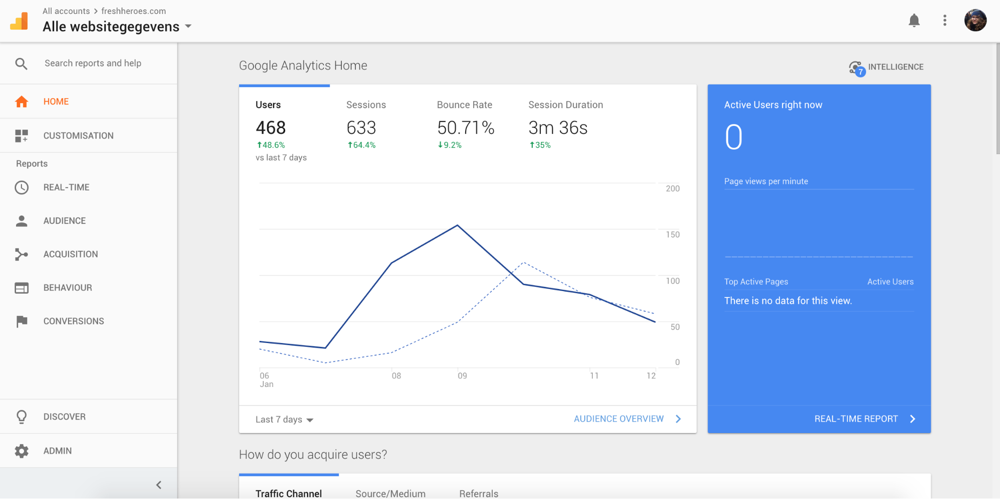 Afbeelding 38) Screenshot van Google Analytics
{kind=link}
Interactie & Datavisualisaties
Er zijn veel kleine interacties die zorgen voor progressive disclosure. Als je hovert over grafieken krijg je duidelijk de cijfers te zien van het datapunt.
Ook zijn er veel mogelijkheden op een pagina om meer informatie te krijgen. Er zijn veel knopjes om van data te switchen en tabellen onder visualisaties om te laten zien wat de data is.
Er zijn wel veel mogelijkheden, dit komt ook doordat Google Analytics een grote tool is die voor veel dingen gebruikt kan worden. Niet alle data die er op staat is even relevant voor Fresh Heroes.
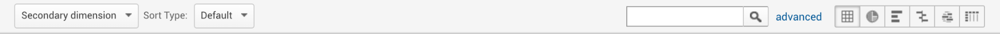 Afbeelding 39) Sorteer en grafiek opties
{kind=link}
Afbeelding 40) voorbeeld van een mouse over
Design
Dat Google Analytics één van de grote systemen is, is duidelijk te zien aan de zorg die gestoken is in de datavisualisaties; alleen het minimale dat nodig is wordt gebruikt zodat er geen ‘chartjunk’ is. Ze voldoen aan bijna alle best practices (zie hoofdstuk Datavisualisatie) van een goede datavisualisatie, behalve duidelijke doelen van een datavisualisatie maar dat lijkt mij ook lastig omdat deze moet worden ontwikkeld voor veel verschillende partijen.
Mixpanel
Mixpanel is een service waarmee je eventdata kunt opslaan en bekijken. Het is een gratis service, maar met limieten als je niet betaalt. Mixpanel wordt veel gebruikt omdat het makkelijk is voor niet technische mensen om te werken met de events. Je kunt bijvoorbeeld funnels later samenstellen, zodat je daar van te voren niet over na hoeft te denken.
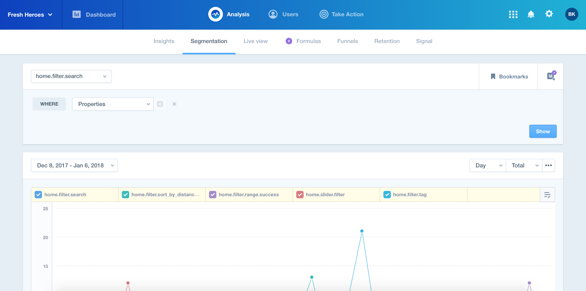 Afbeelding 41) Screenshot van Mixpanel
{kind=link}
Interactie & Datavisualisaties
Bij Mixpanel ligt de focus geheel op events, funnel en gebruikers. Er worden geen dingen bij gehouden zoals pageviews (tenzij je zelf een pageview event maakt). De standaard grafieken die worden gebruikt zijn line charts. Zelf vind ik dit soms lastig omdat het dan kan lijken of iets stijgt in een dag terwijl het één datapunt is voor één dag.
Bij sommige grafieken is er een mogelijkheid om te switchen, maar niet bij álle grafieken is dat mogelijk, zoals bij het overzicht van al je events. Bij het hoveren over een datapunt krijg je een kleine popup waarin je detailinformatie ziet.
Bij Mixpanel zitten de pagina’s verstopt achter twee klikken, je moet bijvoorbeeld eerst op User klikken en daarna kan je pas op ‘explore’ klikken, wat bij gratis gebruikers de enige optie is waarvoor je kunt kiezen. Dat is dus extra interactie die eigenlijk onnodig is.
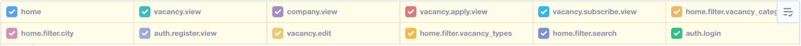 Afbeelding 42) Mogelijkheid sommige data punten uit te zetten
{kind=link}
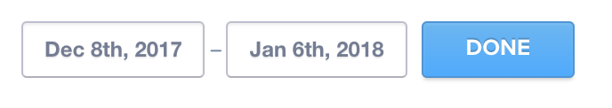 Afbeelding 43) Mogelijkheid om de datum van de data aan te passen
{kind=link}
 Afbeelding 44) Mogelijkheid om je data te filteren
Afbeelding 44) Mogelijkheid om je data te filteren
Design
Mixpanel legt de focus meer op één of twee datavisualisaties dan meerdere kleine. Ze gebruiken vooral klein om verschil te leggen tussen de soorten data. Voorspellingen worden gedaan met een stippellijn, wat een gebruikelijk patroon is. De datavisualisaties van de grafieken zijn rustig, alles wat onnodig is, is weggelaten. Bij Mixpanel is wel snel al duidelijk wat het doel is van een datavisualisatie, vooral dus omdat er minder mogelijkheden zijn.
Kissmetrics
Kissmetrics is een systeem om gebruikersgedrag te meten. Eén van de belangrijkste functies is het maken van ‘populations’ van je gebruikers, wat een andere benaming is voor segmenteren. Andere belangrijke functies zijn het maken van campagnes (voornamelijk email campagnes) en inzage in gebruikersgedrag. Kissmetrics is niet gratis.
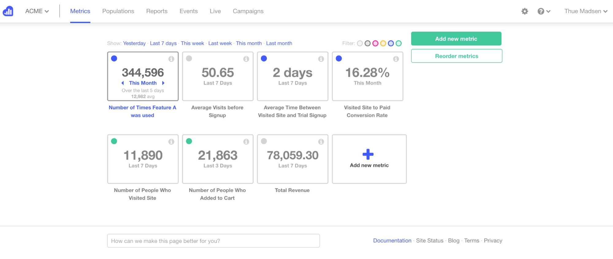 Afbeelding 45) Screenshot van Kissmetrics
{kind=link}
Interactie & Datavisualisaties
Kissmetrics gebruikt vooral datavisualisaties als ondersteuning voor de data. Zo is het overzicht vooral een samenvatting van een hoop nummers. Dit geldt voor alle overzichtspagina's; pas wanneer je op een detail komt krijg je een grafiek te zien. Het merendeel van de applicatie bestaat uit tabellen met steunkleuren.
Bij hovers heb je de mogelijkheid om naar de ‘population’ daarvan te kijken, bijv. welke users een bepaalde actie hebben uitgevoerd. Als er meer informatie over is heb je de mogelijkheid daarnaar door te klikken.
Verder zijn er filter mogelijkheden en zijn er vaste opties om van tijd te kunnen switchen.
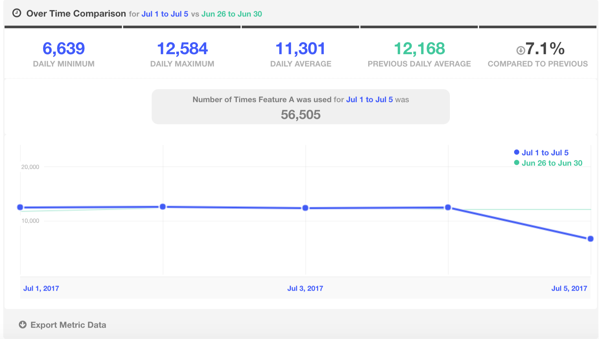 Afbeelding 46) Een detailview
{kind=link}
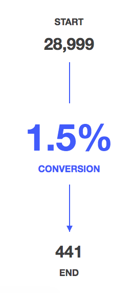 Afbeelding 47) Een samenvatting van een funnel
{kind=link}
Design
Het design is vooral gefocust op tabellen en gebruikt vooral kleur om aan te geven hoe de statistieken vergelijken (groen voor beter, rood voor slechter). In de datavisualisaties worden kleuren vooral gebruikt om verschillende soorten data aan te geven.
Baremetrics
Baremetrics is een analytics systeem dat vooral gefocust is op bedrijven die abonnementen verkopen. Het houdt vooral bij hoeveel geld er binnenkomt en wat de gebruikers opleveren. Ook hebben ze een Forecast gedeelte, waar je kan op basis van je data, voorspellingen kan doen. Baremetrics is een betaalde service.
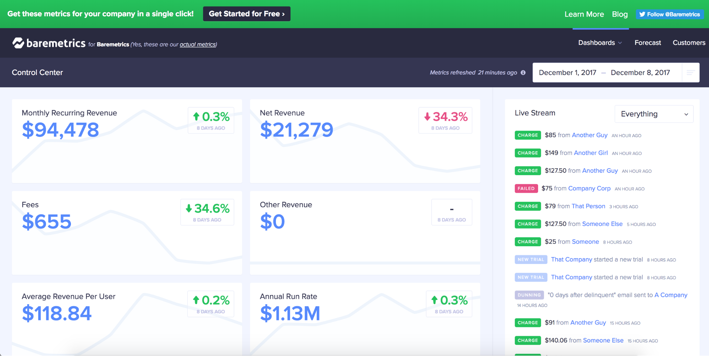 Afbeelding 48) Screenshot van Baremetrics
{kind=link}
Interactie & Datavisualisaties
Op de overzichtspagina heb je een overzicht van alle statistieken die worden bijgehouden en wanneer je er op klikt ga je naar het desbetreffende dashboard. Bij de grafieken is er een mogelijkheid om de schaal van dag te veranderen naar maand of jaar. Ook kun je de grafieken met een paar knoppen veranderen naar een vergelijking of om een trendlijn uit te rekenen.
Alle hovers zijn geanimeerd, wat in het begin leuk is, maar al snel irritatie opwekt. De hovers zijn vooral om meer details te geven of de mogelijkheid om een annotatie te plaatsen bij een datum. Bij een piechart kun je door te hoveren de verborgen percentages laten zien (voor de delen die te klein zijn om nummers te laten zien).
Bij forecasts kun je de eigen data gebruiken om voorspellingen te doen. Je kunt de verwachte percentages aanpassen om te kijken hoe dit uitmaakt bij in de voorspelling.
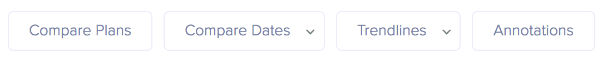 Afbeelding 49) Mogelijkheid om de data in de grafiek aan te passen of iets toe te voegen
{kind=link}
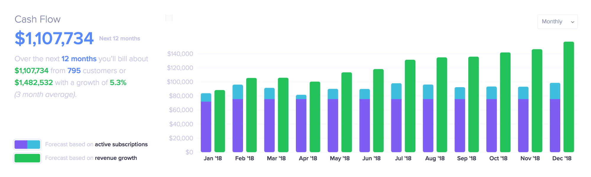 Afbeelding 50) Een forecast over de inkomsten
{kind=link}
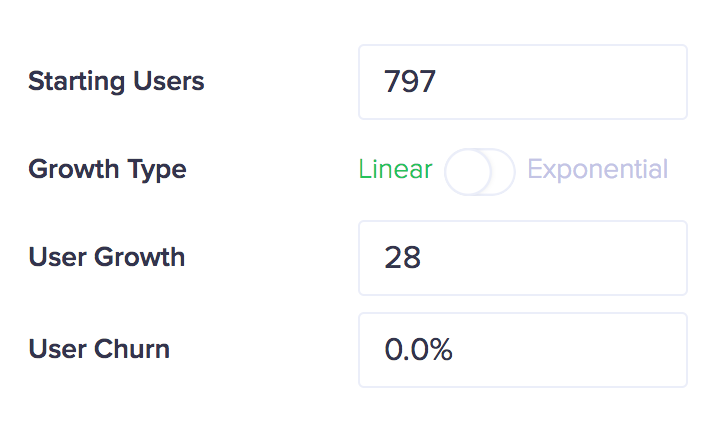 Afbeelding 51) Input mogelijkheden bij een forecast
{kind=link}
Design
Baremetrics maakt gebruik van kleuren om aan te geven of het goed of slecht is of als labels voor de data. Bijna alles is geanimeerd, wat leuk is voor demo’s, maar snel irritant wordt bij hovers.
Wootric
Wootric is een systeem om bij te houden hoe tevreden gebruikers zijn. In tegenstelling tot veel andere services geeft het ook de mogelijkheid om commentaar in te zien van je klanten. Wootric is een betaalde service.
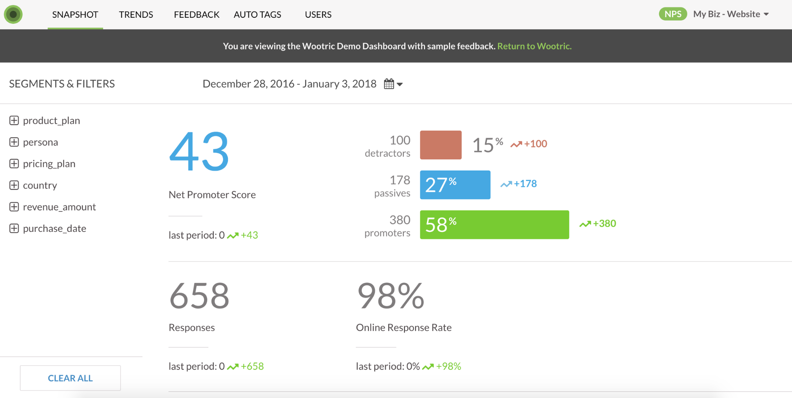 Afbeelding 52) Screenshot van Wootric
{kind=link}
Interactie & Datavisualisaties
De mogelijkheid om de data te kunnen segmenteren en filteren staat altijd aan de linkerkant, waardoor ik het eerst verwarde met een menu. Deze past alle data aan die op de pagina staat, zowel tabellen als grafieken. Als er meerdere open geklapt staan kun je niet meer makkelijk zien wat er aan staat doordat alles naar beneden zakt.
Verder is er ook de mogelijkheid om de datum van de data aan te passen met datepickers. Hovers op datavisualisaties geven meer informatie over het datapunt. Niet alle hovers zijn even makkelijk te bekijken of weer terug in te klappen. De hover op de users pagina blijft openstaan totdat je er zo'n 50px vanaf bent. In sommige grafieken is de lijn om over te hoveren heel dun waardoor het lastig is om het open te klappen.
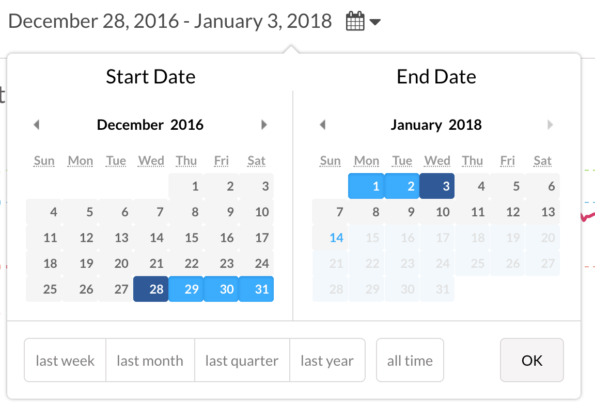 Afbeelding 53) Mogelijkheid om start- en einddatum aan te passen
{kind=link}
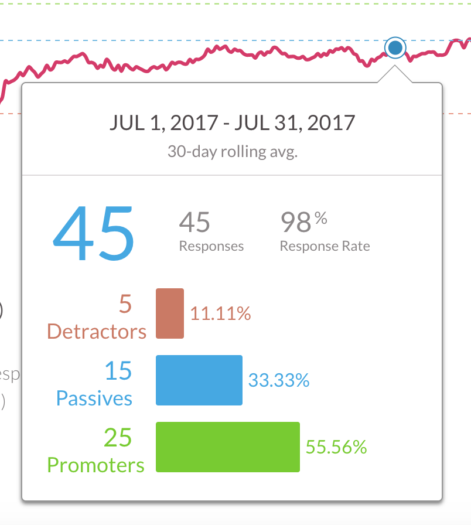 Afbeelding 54) Detail bij mouse over in een datavisualisatie
{kind=link}
Design
Ik vind het design van Wootric op sommige pagina’s onaf ogen, zoals bijvoorbeeld de snapshot pagina. Ik vind het veel weg hebben van een standaard Bootstrap design. De kleuren in de datavisualisaties worden gebruikt om de kwaliteit van de gebruikers of hun reacties aan te geven. Verder worden kleuren ook gebruikt om te laten zien of de trend positief of negatief is, nl. groen voor positief en rood voor negatief.
Bijlage 6 - Commit historie
| Commit | Author | Date | Description |
| e907e8ba | Maaike | 2018-01-17 13:48:55 +0100 | fix(events): small fixes for graphs |
| 94cf5510 | Maaike | 2017-12-08 17:12:35 +0100 | feat(admin-events): bar orientation, events layout, final small fixes (sorry nick) |
| e822e6df | Maaike | 2017-12-07 11:32:54 +0100 | feat(admin-events): sort data in barcharts, remove console.logs |
| c1d2f3c8 | Maaike | 2017-12-07 10:45:25 +0100 | fix(admin-events): fix registration funnel text alignment |
| 75248e3e | Maaike | 2017-12-07 10:39:57 +0100 | fix(adminEvents): fix text stroke in funnels, small graph fixes |
| c9f9b617 | Maaike | 2017-12-07 01:04:39 +0100 | feat(admin-events): add chart for vacancy views + applications |
| d85a3304 | Maaike | 2017-12-06 18:10:11 +0100 | feat(admin-events): add barchart for vacancy views per category and funnel per category |
| e0ae3322 | Maaike | 2017-12-06 14:56:27 +0100 | refactor(admin-events): make category colors the same for future graphs |
| 0e7fe62b | Maaike | 2017-12-06 14:55:42 +0100 | feat(admin-events): use category_id's to make vacancies placed data |
| 54817d54 | Maaike | 2017-12-01 18:42:01 +0100 | feat(events): migration to add category_id to vacancy events |
| edb595fa | Maaike | 2017-12-01 17:41:43 +0100 | feat(admin-events): add graph to vacancy events and prepare for next graph |
| 473a4a83 | Maaike | 2017-11-30 17:52:25 +0100 | feat(admin-events): add page for vacancy events |
| 2b9088fb | Maaike | 2017-11-30 17:52:10 +0100 | feat(admin-events): change graph order on user events page |
| 535ae4b9 | Maaike | 2017-11-30 16:54:12 +0100 | feat(admin-events): add registration funnel |
| 06986864 | Maaike | 2017-11-30 16:51:46 +0100 | feat(admin-events): add lines to bar charts, add legend to register by type chart |
| 44176b25 | Maaike | 2017-11-30 10:15:15 +0100 | feat(bisdashboard): add user analytics page |
| 2865bfc7 | Maaike | 2017-11-24 17:58:20 +0100 | refactor(admin-events): seperate google api requests |
| 74618533 | Maaike | 2017-11-24 17:27:46 +0100 | refactor(admin-events): clean up |
| 97a5dfc0 | Maaike | 2017-11-24 16:59:26 +0100 | feat(admin-events): add legend to pie chart |
| 4ad26547 | Maaike | 2017-11-24 16:25:01 +0100 | feat(admin-events): move seperating and sorting vacancy view events to server |
| 6032b9b6 | Maaike | 2017-11-24 15:14:23 +0100 | feat(admin-events): add pie chart for users, add most viewed vacancy list |
| 69912a56 | Maaike | 2017-11-22 19:36:30 +0100 | feat(admin-events): move to styling to css, add tooltip |
| 52bc29e3 | Maaike | 2017-11-22 19:24:34 +0100 | feat(admin-events): grouped barchart |
| 9b202c44 | Maaike | 2017-11-22 12:15:01 +0100 | feat(admin-events): remove query getter, render each chart of response |
| 588bf7d2 | Maaike | 2017-11-17 17:00:28 +0100 | refactor(admin-events): WIP allow multiple queries |
| 6019ebc0 | Maaike | 2017-11-17 16:24:08 +0100 | refactor(admin-events): make render bar chart reuseable for different queries |
| a6a4cc0d | Maaike | 2017-11-17 16:23:06 +0100 | feat(admin-events): move sign in button on succesful sign in |
| f434a028 | Maaike | 2017-11-15 18:22:58 +0100 | feat(admin-events): page view grapgh |
| a2482b2e | Maaike | 2017-11-15 12:16:38 +0100 | feat(admin-events): barry, favorite vacancy event and include d3 js |
| 2b03a991 | Maaike Hek | 2017-11-03 16:22:30 +0100 | feat(admin-events): working google reporting api, login button for google analytics, function to get queries by name |
| 668e9f36 | Maaike Hek | 2017-11-02 10:39:01 +0100 | feat(admin-events): add controller, view and js for events page |
| 0c504fc9 | Maaike | 2017-11-21 10:07:26 +0100 | Merge branch 'develop' into MD1.20.0 |
| 850a15a4 | Maaike | 2017-11-21 10:05:24 +0100 | Merge branch 'MD1.19.1' into develop |
| 5da09e94 | Maaike | 2017-11-21 10:04:15 +0100 | feat(analytics-events): remove fields, rename fields, add session_id |
| d0b79f4e | Maaike | 2017-11-13 16:06:49 +0100 | Merge branch 'ft-events' into develop |
| cfb6aa6b | Maaike Hek | 2017-11-02 10:38:13 +0100 | feat(analyticsEvents): add fired_at field for correct dates |
| e01ec054 | Maaike | 2017-10-27 16:44:37 +0200 | feat(events): add events to places with mixpanel events |
| d86786e4 | Maaike | 2017-10-27 14:41:09 +0200 | feat(events): WIP add events to palces with mixpanel events |
| 35e92882 | Maaike | 2017-10-13 17:02:30 +0200 | feat(analytics-events): add event listener for analytics events |
| 8e752038 | Maaike | 2017-10-13 17:01:04 +0200 | feat(events): add analytics events |
| 5d15297c | Maaike | 2017-10-13 11:23:29 +0200 | fix(routes): alignment fix 🙀 |
Bijlage X - Samenvatting gebruikerstest
Barry Kraakman
Locate: Informatie is makkelijk te vinden, fijn dat de pagina’s gecategoriseerd zijn. Mist nog wel de mogelijkheid om meer data in te kunnen zien door de datum aan te passen.
Understand: Geen opmerkingen over de visualisaties. Hij mist wel nog context bij de grafieken, vooral over wanneer de data geldt. Barry deed zelf de suggestie om het in de titel van een visualisatie te zetten. Doordat het niet goed is aangegeven is het lastig om te zien wat overzicht data is en wat data van deze week is. Als laatste had hij nog commentaar dat bij vergelijkingen het helder moet zijn waarmee wordt vergeleken.
Act: Barry wil het liefst het eerst een tijdje uit proberen voor dat hij hier iets over zegt, maar het lijkt wel veel belovend.
Pim Verlaan
Locate: Pagina categorieen zijn prima. Hij mist nog de mogelijkheid om alle data in te kunnen zien. Verder zou hij het fijn vinden om lange termijn trends te kunnen analyseren. Dit is voor hem interessanter dan de dag tot dag operaties van Fresh Heroes. Verder had Pim nog een aantal suggesties voor grafieken die hij interessant zou vinden:
- Pageviews & Bounce Rate
- Tijd op pagina
- Aantal pagina’s bezocht per bezoeker
- Vacature views van ingelogde bezoekers vs. niet ingelogd
- Welke vacature tags presteren het beste
Understand: De button animatie werkt afleidend, hij raadt aan deze weg te halen op de pagina’s waar ik geen analytics gebruik of helemaal weg te halen als een gebruiker is ingelogd. Pim mist ook de context bij de grafieken, het is verwarrend dat totalen en data van deze week niet duidelijk aangegeven is.
Act: Pim kon wel al een aantal conclusies trekken uit de data visualisaties, maar wees er wel op dat het voor nu meer een tool is voor Barry en voor de korte termijn.
Bijlage X - Lijst van events
Doordat ik de naming heb overgenomen van Mixpanel is de benaming van camelCase en underscores inconsistent. Ik heb dit voor nu bewust voor nu zo gelaten. Mocht er toch besloten worden de data uit Mixpanel te exporteren dan komt deze overeen met de huidige data.
Deze events zijn beschikbaar in mijn oplossing:
- auth
.activate
.claim.view
.password_reset
.password_reset.view
.register
.register.view - admin.view
- company.view
- home
.distanceFilter
.filter - login
- vacancy
.apply
.applyView
.create
.delete
.deleteConfirm
.deleteHasApplication
.edit
.favorite
.report.invite
.report.invite.cancel
.subscribe
.subscribeView
.view
Bijlage X
Grafiek toelichting
Unieke pageviews per week
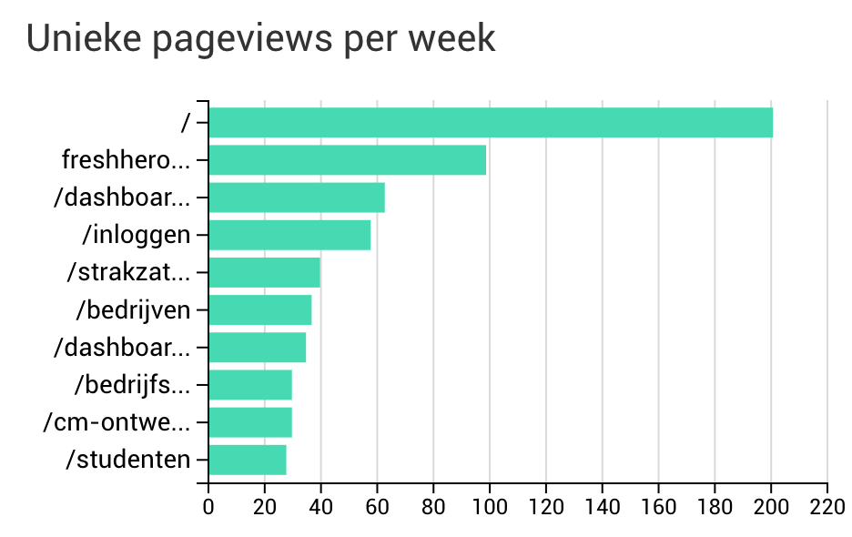 Afbeelding 24) Staafdiagram voor unieke pageviews per week
{kind=link}
Unieke pageviews per week is nominale data (de pagina’s) gecombineerd met ratio data. In een staafdiagram is duidelijk de verhouding te zien tussen de verschillende ratio. Ik heb hier voor een horizontale versie gekozen omdat er dan meer ruimte is voor labels.
Sessies per dag
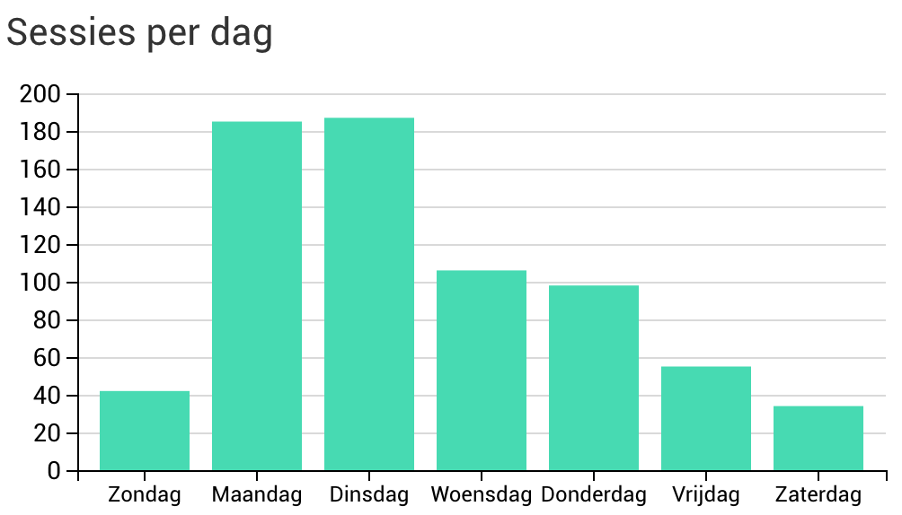 Afbeelding 25) Histogram voor aantal sessies per dag van deze week
{kind=link}
Sessies per dag een combinatie van interval data (de dagen van de week) en ratio data (het aantal sessies). Dit soort grafieken lijken op een staafdiagram, maar wordt officieel een histogram genoemd omdat het gebruikt maakt van interval in plaats van nominaal. (Ribecca, z.d.).
Page views voor /bedrijfsjungle per dag
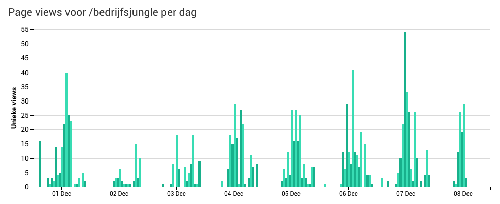 Afbeelding 26) Histogram voor het aantal unieke views voor een pagina per dag van deze week
{kind=link}
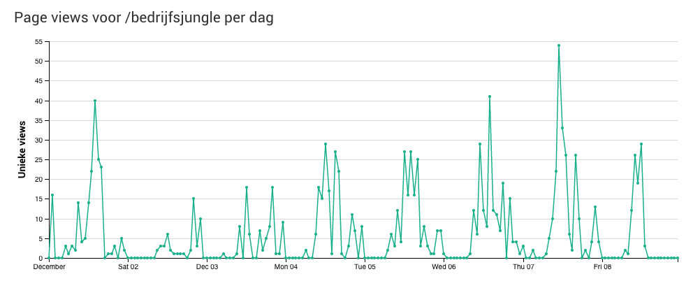 Afbeelding 27) Lijndiagram voor het aantal unieke views voor een pagina per dag van deze week
{kind=link}
Bij de datavisualisatie voor het aantal unieke view per dag voor een pagina (van deze week) twijfelde ik of ik gebruik zou maken van een histogram of een lijndiagram. Elke dag is opgedeeld per uur, zodat je kan zien wanneer er pieken in views zijn. Beide visualisaties laten dit zien, dus uiteindelijk heb ik het aan mijn gebruikers gevraagd. Barry vond de hover met de histogram makkelijker, waardoor ik daarvoor gekozen heb.
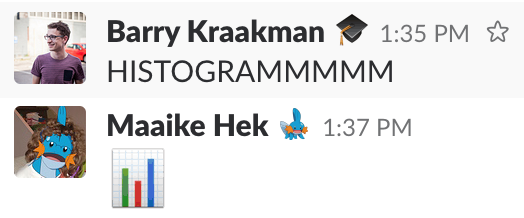 Afbeelding 28) Barry laat kort en bondig zijn voorkeur aan mij weten
{kind=link}
Gebruikers per soort
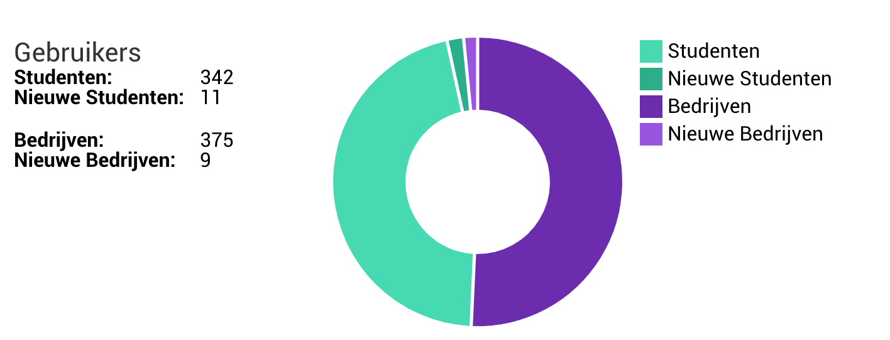 Afbeelding 29) Donutdiagram voor het soort gebruikers en het aantal nieuwe gebruikers deze week
{kind=link}
Gebruikers per soort is ratio (het aantal gebruikers) en nominaal (het soort gebruikers). Ik heb gekozen voor een donutdiagram met een samenvatting ernaast. Met een donutdiagram kan de gebruiker snel zien wat de verhouding is tussen de twee soorten. Omdat de nieuwe gebruikers ook bij de oude gebruikers horen heb ik gekozen om de kleuren dicht bij elkaar te houden.
Donut (en taart) diagrammen zijn redelijk controversieel voor datavisualisaties, omdat er geen groot aantal categorieën in kan worden laten gezien en dat mensen minder goed zijn in het vergelijken van oppervlakte. (Hickey, 2013) Toch heb ik gekozen voor een donutdiagram omdat het weinig categorieën zijn en je even snel kan zien hoe de verhoudingen liggen.
Aanmeldingen per type
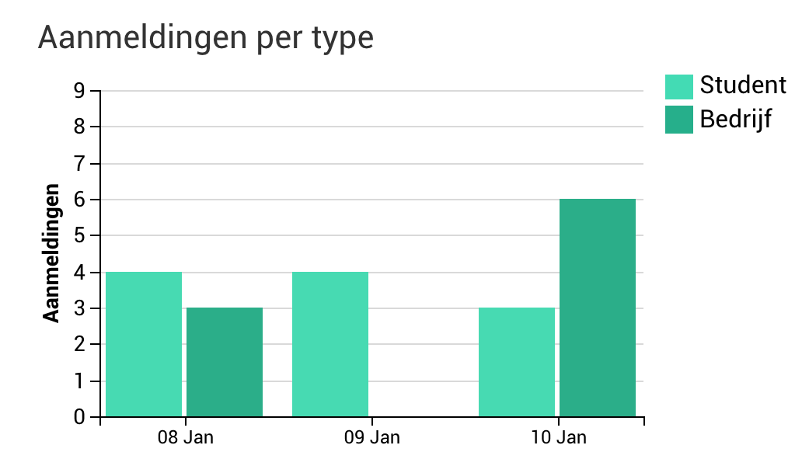 Afbeelding 30) Gegroepeerde staafdiagram voor het aantal aanmeldingen per type
{kind=link}
Aanmeldingen per type is een combinatie van nominaal (categorieën), interval (dagen) en nominaal (aantal aanmeldingen). Het is geen histogram omdat de horizontale data niet geheel opeenvolgend zijn. De lichtgroene staaf is andere data dan de donkerdere staaf, niet een gevolg van elkaar. Ik heb ervoor gekozen hier een gegroepeerde staafdiagram van te maken zodat de twee categorieën makkelijk vergeleken kunnen worden.
Bekeken vacatures deze week
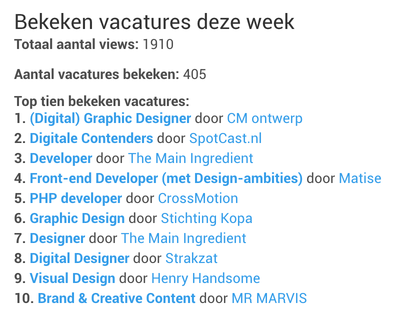 Afbeelding 31) Top 10 lijst van bekeken vacatures deze week
{kind=link}
Voor bekeken vacatures deze week heb ik ervoor gekozen om geen visualisatie te maken. Er zijn te veel vacatures om hier een goede visualisatie van te maken, dus heb ik er in overleg voor gekozen een top 10 lijst te maken. Volgens de soorten data is dit ordinale data in combinatie met nominale data.
Actieve vacatures per categorie
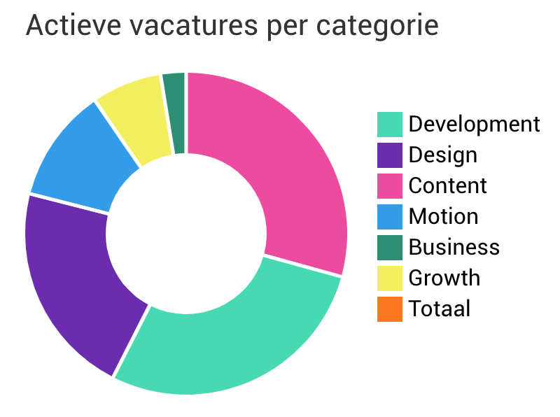 Afbeelding 32) Top 10 lijst van bekeken vacatures deze week
{kind=link}
Net als bij Gebruikers per soort hebben we hier te maken met nominale data en en ratio data. Hier is een categorie bijgekomen omdat ik de kleuren van de categorieën consistent wil houden op de pagina. Ik heb hier ook voor een donutdiagram gekozen omdat het belangrijk is om te zien wat de belangrijkste categorieën zijn en niet precies hoeveel. Als de gebruiker toch wil weten hoeveel het precies is, kan de gebruiker over een sectie heen hoveren.
 Afbeelding 33) Voorbeeld van een hover over een sectie
Afbeelding 33) Voorbeeld van een hover over een sectie
Nieuwe vacatures per categorie
Afbeelding 34) Staafdiagram voor het aantal nieuwe vacatures deze week per categorie
Nieuwe vacatures per categorie maakt gebruikt van nominale (categorieën) en ratio data. Ik heb voor een staafdiagram gekozen zodat de categorieën makkelijk te vergelijken zijn. Ik heb de labels gedraaid zodat er genoeg ruimte is om ze te lezen.
Views en sollicitaties per categorie
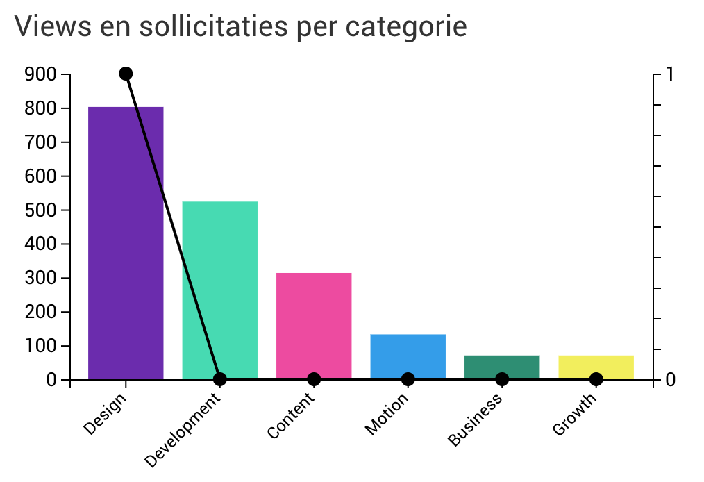 Afbeelding 35) Combinatie grafiek over het aantal views per categorie en het aantal sollicitaties per categorie van deze week
{kind=link}
In views en sollicitaties per categorie wordt gebruik gemaakt van nominale (categorieën) en ratio data (aantal views en aantal sollicitaties). Ik heb er voor gekozen om de ratio’s te combineren in dezelfde visualisatie. Zo kan de gebruiker niet alleen de views of sollicitaties vergelijken, maar ook kijken hoe de verhouding tussen views en sollicitaties is.
Registratie & Sollicitatie funnels
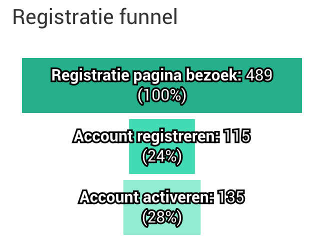 Afbeelding 36) Funnel visualisatie voor de registratie flow met data van deze week
{kind=link}
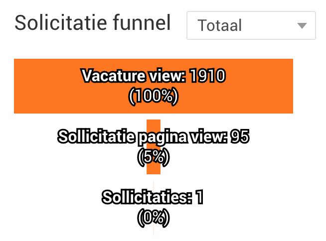 Afbeelding 37) Funnel visualisatie voor de sollicitatie flow met data van deze week
{kind=link}
Voor de funnel visualisaties heb ik geen vorm gekozen die voor komt in Data Visualisation Catalogue. De funnel maakt gebruik van nominale data (de stappen), ordinale data (de volgorde van de stappen en ratio data (de aantallen en percentages). Ik gebruik de ratio data van percentages om de grootte van de staven uit te rekenen, ze staan geordend volgens de ordinale data van de stappen volgorde. Als laatste laat ik de nominale data terug komen als labels, zodat duidelijk is waar elke staaf voor staat.
Ik heb hiervoor gekozen omdat je door de verhoudingen tussen de staven een idee krijgt wat het verschil is, maar mijn gebruikers vinden het ook fijn om de percentages te hebben. De visualisatie met bars is hier als ondersteuning van de tekst.
Bronnen
- Advanced Use Cases | Analytics Reporting API v4. (z.d.). Geraadpleegd 17 december 2017, van https://developers.google.com/analytics/devguides/reporting/core/v4/advanced
- Ajax. (z.d.). Geraadpleegd 17 december 2017, van https://developer.mozilla.org/en-US/docs/Web/Guide/AJAX
- Algemene voorwaarden. (z.d.). Geraadpleegd 17 december 2017, van https://freshheroes.com/algemene-voorwaarden
- Analytics. (z.d.). Geraadpleegd 17 december 2017, van https://analytics.google.com/analytics/web/
- Anderson, S. P. (2011). Seductive Interaction Design: Creating Playful, Fun, and Effective User Experiences. Pearson Education.
- Baremetrics: Subscription Analytics & Insights for Stripe, Braintree, Recurly and more! (z.d.). Geraadpleegd 17 december 2017, van https://baremetrics.com
- Big data en profiling. (z.d.). Geraadpleegd 17 december 2017, van https://autoriteitpersoonsgegevens.nl/nl/onderwerpen/internet-telefoon-tv-en-post/big-data-en-profiling
- Black, A., Luna, P., Lund, O., & Walker, S. (2017). Information Design: Research and Practice. Taylor & Francis.
- Bostock, M. (2012, mei 2). Thinking with Joins. Geraadpleegd 17 december 2017, van https://bost.ocks.org/mike/join/
- Bostock, M. (2015, december 28). Introducing d3-scale. Geraadpleegd 10 januari 2018, van https://medium.com/@mbostock/introducing-d3-scale-61980c51545f
- Bostock, M., Carter, S., & Tse, A. (2014, mei 21). Is It Better to Rent or Buy? The New York Times. Geraadpleegd van https://www.nytimes.com/interactive/2014/upshot/buy-rent-calculator.html
- Brody, M. (2015, juli 15). How to drive UX with AJAX. Geraadpleegd 17 december 2017, van https://www.webdesignerdepot.com/2015/07/how-to-drive-ux-with-ajax/
- Canvas API. (z.d.). Geraadpleegd 10 januari 2018, van https://developer.mozilla.org/en-US/docs/Web/API/Canvas_API
- Chart dos and don’ts. (2016, maart 21). [Page]. Geraadpleegd 17 december 2017, van https://www.eea.europa.eu/data-and-maps/daviz/learn-more/chart-dos-and-donts
- Choudhury, S. (2013, juni 6). Choosing the right chart type: Bar charts vs Column charts - FusionBrew. Geraadpleegd 17 december 2017, van https://www.fusioncharts.com/blog/bar-charts-or-column-charts/
- Cookies. (z.d.). Geraadpleegd 17 december 2017, van https://autoriteitpersoonsgegevens.nl/nl/onderwerpen/internet-telefoon-tv-en-post/cookies
- Creating a Report | Analytics Reporting API v4. (z.d.). Geraadpleegd 17 december 2017, van https://developers.google.com/analytics/devguides/reporting/core/v4/basics
- De Sleepwet. (z.d.). Geraadpleegd 17 december 2017, van https://sleepwet.nl
- DSDM Atern Handbook (2008). (2015, november 10). Geraadpleegd 17 december 2017, van https://www.agilebusiness.org/content/moscow-prioritisation-0
- Eerste Kamer der Staten-Generaal - Wet op de inlichtingen- en veiligheidsdiensten 2017 (34.588). (z.d.). Geraadpleegd 17 december 2017, van https://www.eerstekamer.nl/wetsvoorstel/34588_wet_op_de_inlichtingen_en
- Engelfriet, A. (2015, januari 23). Mag mijn werkgever Google Analytics op het intranet zetten? Geraadpleegd 17 december 2017, van https://blog.iusmentis.com/2015/01/23/mag-mijn-werkgever-google-analytics-op-het-intranet-zetten/
- Engelfriet, A. (2016, december 16). Persoonsgegevens op Internet @ iusmentis.com door Arnoud Engelfriet. Geraadpleegd 17 december 2017, van http://www.iusmentis.com/maatschappij/privacy/persoonsgegevens/
- Events - Laravel - The PHP Framework For Web Artisans. (z.d.). Geraadpleegd 17 december 2017, van https://laravel.com/docs/5.5/events
- Fresh Heroes, stageplek voor creatieve vogels! (z.d.). Geraadpleegd 17 december 2017, van https://freshheroes.com
- Gallery · d3/d3 Wiki. (z.d.). Geraadpleegd 17 december 2017, van https://github.com/d3/d3/wiki/Gallery#the-new-york-times-visualizations
- Google Analytics Academy. (z.d.). Geraadpleegd 17 december 2017, van https://analytics.google.com/analytics/academy/
- Grimmett, C. (2016, augustus 14). D3 Intro and Joins Notes. Geraadpleegd 17 december 2017, van http://www.cagrimmett.com/til/2016/08/14/d3-introduction-notes.html
- Handy, T. (2017, maart 31). The Startup Founder’s Guide to Analytics. Geraadpleegd 17 december 2017, van https://thinkgrowth.org/the-startup-founders-guide-to-analytics-1d2176f20ac1
- Hickey, W. (2013, juni 17). The Worst Chart In The World. Geraadpleegd 17 december 2017, van http://www.businessinsider.com/pie-charts-are-the-worst-2013-6
- Hopkins, N. (2017, september 25). Deloitte hit by cyber-attack revealing clients’ secret emails. The Guardian. Geraadpleegd van http://www.theguardian.com/business/2017/sep/25/deloitte-hit-by-cyber-attack-revealing-clients-secret-emails
- Introduction to events. (z.d.). Geraadpleegd 17 december 2017, van https://developer.mozilla.org/en-US/docs/Learn/JavaScript/Building_blocks/Events
- Keybase. (z.d.). Geraadpleegd 11 januari 2018, van https://keybase.io/
- Kirk, A., Timms, S., Rininsland, Ǯdrew, & Teller, S. (2016). Data Visualization: Representing Information on Modern Web. Packt Publishing Ltd.
- Kissmetrics | Behavioral analytics and engagement platform. (z.d.). Geraadpleegd 17 december 2017, van https://www.kissmetrics.com/
- Kulche, P. (z.d.). Privacy op internet | Consumentenbond. Geraadpleegd 17 december 2017, van https://www.consumentenbond.nl/internet-privacy
- Laravel - The PHP Framework For Web Artisans. (z.d.). Geraadpleegd 17 december 2017, van https://laravel.com/
- laravel-analytics: A Laravel package to retrieve pageviews and other data from Google Analytics. (2017). PHP, Spatie. Geraadpleegd van https://github.com/spatie/laravel-analytics (Original work published 2015)
- Laubheimer, P. (2017, juni 18). Dashboards: Making Charts and Graphs Easier to Understand. Geraadpleegd 17 december 2017, van https://www.nngroup.com/articles/dashboards-preattentive/
- Ltd, H. (z.d.). Hotjar - Heatmaps, Visitor Recordings, Conversion Funnels, Form Analytics, Feedback Polls and Surveys in One Platform. Geraadpleegd 17 december 2017, van https://www.hotjar.com
- Mester, T. (2017, januari 23). Google Analytics vs. SQL - When and why to build your own data tools? Geraadpleegd 17 december 2017, van https://data36.com/build-data-tools-google-analytics-vs-sql/
- Mixpanel | Product Analytics for Mobile, Web, and Beyond. (z.d.). Geraadpleegd 17 december 2017, van https://mixpanel.com/
- Murray, S. (2017). Interactive Data Visualization for the Web: An Introduction to Designing with. O’Reilly Media, Inc.
- Murray, S. (z.d.). Interactive Data Visualization for the Web. Geraadpleegd 17 december 2017, van http://chimera.labs.oreilly.com/books/1230000000345/index.html
- Ng, A. (2017, september 8). Equifax data leak may affect up to nearly half the US population. Geraadpleegd 17 december 2017, van https://www.cnet.com/news/equifax-data-leak-hits-nearly-half-of-the-us-population/
- Nielsen, J. (2006, april 12). Progressive Disclosure. Geraadpleegd 17 december 2017, van https://www.nngroup.com/articles/progressive-disclosure/
- O’Sullivan, D. (2016, januari 11). 6 steps to designing better dashboards. Geraadpleegd 17 december 2017, van https://www.invisionapp.com/blog/designing-better-dashboards/
- Overview | Analytics Reporting API v4. (z.d.). Geraadpleegd 17 december 2017, van https://developers.google.com/analytics/devguides/reporting/core/v4/
- Perna, M. A. (2016, maart 23). Canvas vs. SVG: Choosing the Right Tool for the Job. Geraadpleegd 17 december 2017, van https://www.sitepoint.com/canvas-vs-svg-choosing-the-right-tool-for-the-job/
- Pricing - Mixpanel | Product Analytics. (z.d.). Geraadpleegd 17 december 2017, van https://mixpanel.com/pricing/
- Privacybeleid. (z.d.). Geraadpleegd 17 december 2017, van https://freshheroes.com/privacy-policy
- rapportprivacyjijvandaagnationaleprivacytest.pdf. (z.d.). Geraadpleegd van https://eenvandaag.avrotros.nl/fileadmin/editorial/docs/rapportprivacyjijvandaagnationaleprivacytest.pdf
- Ribecca, S. (z.d.). The Data Visualisation Catalogue. Geraadpleegd 17 december 2017, van https://datavizcatalogue.com/index.html
- rj45. (2008, april 8). Simple Example of MVC (Model View Controller) Design Pattern for Abstraction - CodeProject. Geraadpleegd 17 december 2017, van https://www.codeproject.com/Articles/25057/Simple-Example-of-MVC-Model-View-Controller-Design
- Rost, L. C. (2017, maart 10). Why Do We Visualise Data? · Lisa Charlotte Rost. Geraadpleegd 17 december 2017, van https://lisacharlotterost.github.io/2017/03/10/why-do-we-visualize-data/
- rs_20071211_persoonsgegevens_op_internet_definitief.pdf. (z.d.). Geraadpleegd van https://autoriteitpersoonsgegevens.nl/sites/default/files/downloads/rs/rs_20071211_persoonsgegevens_op_internet_definitief.pdf
- Soegaard, M. (z.d.). Gestalt principles of form perception. Geraadpleegd 17 december 2017, van https://www.interaction-design.org/literature/book/the-glossary-of-human-computer-interaction/gestalt-principles-of-form-perception
- Subotin, S. (z.d.). Dashboard Design - Considerations and Best Practices. Geraadpleegd 17 december 2017, van https://www.toptal.com/designers/data-visualization/dashboard-design-best-practices
- SVG. (z.d.). Geraadpleegd 10 januari 2018, van https://developer.mozilla.org/en-US/docs/Web/SVG
- SVG vs canvas: how to choose (Windows). (z.d.). Geraadpleegd 17 december 2017, van https://msdn.microsoft.com/en-us/library/gg193983%28v=vs.85%29.aspx
- The Gestalt Principles. (z.d.). Geraadpleegd 17 december 2017, van http://graphicdesign.spokanefalls.edu/tutorials/process/gestaltprinciples/gestaltprinc.htm
- Tufte, E. R. (1992). Envisioning Information. Graphics Press.
- Ware, C. (2004). Information Visualization: Perception for Design. Elsevier.
- Why is using an SSH key more secure than using passwords? - Information Security Stack Exchange. (z.d.). Geraadpleegd 11 januari 2018, van https://security.stackexchange.com/questions/69407/why-is-using-an-ssh-key-more-secure-than-using-passwords
- Wootric | In-App Web & Mobile, Email, SMS Net Promoter Score, CSAT, CES Survey Software, Text & Sentiment Analytics. (z.d.). Geraadpleegd 17 december 2017, van https://www.wootric.com/
- XenitXTD. (2014, oktober 15). New to Laravel,MVC and need a little clarity on MVC | Laravel.io. Geraadpleegd 17 december 2017, van https://laravel.io/forum/10-15-2014-new-to-laravelmvc-and-need-a-little-clarity-on-mvc
Termen
- TBA (To be added)